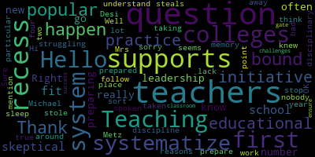
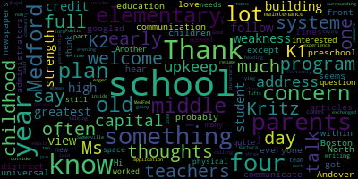

AI-generated transcript of Medford School Committee - Superintendent Interviews - Night 1 - 04/02/18
English | español | português | 中国人 | kreyol ayisyen | tiếng việt | ខ្មែរ | русский | عربي | 한국인
Back to all transcripts
[Burke]: Meeting of the Medford School Committee will now come to order. The secretary will call the roll.
[Ruseau]: Mrs. Metz, here.
[Kreatz]: Mrs. Stone, here. Mr. Ruggiero, here. Mr. Russo, here. Mrs. Van de Koot, here.
[Burke]: Mayor Burke, present. Seven present, none absent. All please rise and salute our flag. I pledge allegiance to the flag of the United States of America, and to the Republic for which it stands,
[Kreatz]: one nation, under God, indivisible, with liberty and justice for all.
[Burke]: Thank you everyone for being here tonight. I see many administrators, teachers, parents, so it's really nice to have you here this evening. As you know, we will be conducting public interviews for the four candidates that were submitted from the search committee. The recommendations came from that body that met confidentially in executive session over the last month, and we have their recommendations at hand. So this evening we will be meeting with Dr. Donna Strait and Dr. John Ferrella, and then we have the remaining two on Wednesday night starting at 6.15 also. This was a very intense process. I think we're pretty much on schedule. We might be like a few days behind at this point. But the committee put in a lot of work and a lot of effort. And I'd like to just personally thank you. And we'll have all the members up at a later date. But really, thank you for the efforts that went into this. As you know, a couple of the meetings were led by the group without school committee members present. And they did a phenomenal job really working hard on questions and processes, so I thank all of you for the work that you did. And at this point, we would like to welcome in our very first person, Dr. Donna Strait. But before I start, just that this is really an opportunity for the school committee to interview the candidate. As you know, it is school committee purview to hire the superintendent of schools. So this really is an opportunity for the seven of us to ask questions and we will not be deliberating this evening obviously, but we will ask questions and then continue on Wednesday evening. So I am going to welcome in Dr. Strait.
[o9F0qYH9Geo_SPEAKER_05]: Nice to meet you.
[Clerk]: Nice to meet you. Nice to meet you.
[Straight]: Good evening everyone.
[Burke]: Right to the middle.
[Kreatz]: Right there. I knew it was right there in the middle.
[Burke]: Well, thank you so much, Dr. Strait, for joining us this evening. I know that the search committee thoroughly enjoyed and learned quite a bit about you during that. But we are starting fresh with the seven members of the school committee. So we would like to open it up at this point just for opening comments. Sure.
[Straight]: Thank you. First of all, I'd just like to thank you for having me and giving me this wonderful opportunity to speak with you regarding one of the most important positions that we have in helping to lead your schools. I know that there's a huge legacy that we will have to follow by Superintendent Belson and that's such an impressive stature that I would look forward to being able to move forward. So I just want to share a few things in reviewing your Medford application process and what some of the standards are. I found that much of what you're looking for with your next superintendent are elements of my background, that I've had the opportunity to work in both suburban and urban districts. I've had the opportunity to create, determine, and implement different varieties of academics, curriculum, and assessment. I've also been very invested in working in social-emotional learning for students, which we know today is a huge situation with many of our students and parents dealing with and an area that we really want to develop. I just feel very excited at the opportunities that you have here as well as the extensive collaboration between the city and the school district and knowing that everybody wants the best, not just for this city, but also for our children. So thank you again.
[Burke]: Very good. Thank you so much. I'm going to open it up to Miss Mustone. Welcome. Nice to officially meet you.
[Mustone]: I would say if you've googled Medford school system, you probably got a lot of articles about communication within the district with parents, with teachers. So if you could talk about how you communicate with teachers, administrators, parents, and everyone, and children, and the students, that would be, I would love to hear it. Thank you.
[Straight]: Absolutely. As a superintendent, communication is vital to ensure that people understand what is the message of our school district, what is it that we're trying to do for our students. We want our students to be successful and have the skills, whether it's college and career readiness, for the 21st century global society that we're moving into. So I communicate in a variety of different ways, certainly the old ways, which would include going out to parent groups, going out to civic organizations, going to student events, whether it's a play, a sporting event, a Decker event. I communicate through parent organizations, PTO, the special education pack. I also find ways to communicate technically as well. Recently, because we have a new role of student services. So we've taken everything not general education in North Andover and we've put it all under the same umbrella of student services. So in speaking with people about what student services are within our own community, I realized that many people didn't understand exactly what student services was. So I decided one of the best approaches would be to create a 30 minute show using the camera opportunities that we have the cable in our own town. So as much as maybe we don't enjoy seeing ourselves on TV all the time, I thought that was the best way to facilitate some knowledge with regard to the good work that we do within our schools. So we most recently in this last week, we taped a show where I invited my director of social emotional learning and three of our therapists onto the show. And effectively what we did was number one, discuss what are some of the things that you would see in the home for your child if they're having some anxiety difficulties, they're experiencing school phobia. What does that look like? How does that present itself at different developmental ages? And then define some strategies that parents could utilize within their home. Also, we can certainly tweet. We can send out monthly and weekly newsletters. But I think the most important thing in order to build trust and transparency is to see people in person, meet people, attend functions, communicate, set up meetings, whether it's with union representatives, walkthroughs in classrooms, sit down with students, see what they're doing, have conversations with them, enjoy the opportunities of our student representative to share with what's happening. I noticed you have a play going on, and that's pretty exciting. So I was able to speak with some of the students on the way in.
[Mustone]: Thank you very much.
[Burke]: You're welcome. Do you have any follow-up? No. No? Thank you. Thank you. Ms. Kreatz.
[Kreatz]: Hello. Hi. Nice to meet you, Dr. Strait. Thank you. You too. Hi. So, as you know, we have 18 approved vocational programs. Yes. How would you enhance the programs already in place? What is needed to remain on the cutting edge of technology? And where do you see the programs in three to five years? OK.
[Straight]: So I'm going to see if I can write down all of the elements of your question. Yes.
[Kreatz]: And I can repeat that. Please do.
[Straight]: Thank you.
[Kreatz]: OK. So the first part is, how would you enhance the programs already in place? What is needed to remain on the cutting edge of technology? OK. And where do you see the programs in three to five years?
[Straight]: OK. First, what I'd like to say is I'd like to just compliment you on your capacity to have a high school that serves both your traditional college prep program for students, but as well as adapts the vocational component My personal children actually went through a high school that was both of those things, and it was just such a wonderful opportunity for all students. So with regard to enhancing the programs, I did a review of all of the programs that you have to offer currently, and I was quite impressed with the breadth of programming that you have, with the certifications that students are able to come out of the program with so they can obtain employment if that is something that they desire to do. They can transfer those credits on to a two-year school, or a technical school, or even to a four-year school if they're taking some of the media or computer applications programs. So I think as far as enhancing the programs, it's always a nice idea to evaluate what you have in place. You can take a look at the types of programming you have, who's teaching those programs. Are they matching up to the current standards that we have? Have we currently implemented programs with regard to what our 21st century companies need right now? I would also look at asking companies. Oftentimes we go to a company or a business and we ask them, you know, what can you do for us? How can you help us build our robotics program or donate some computers? I think a question in this case in order to enhance our programs would be, what do you need from our students? You know, how can we help and enhance our programs in order to ensure our students are meeting the appropriate levels of career choice that you need? So with regard to looking at the cutting edge of technology, again, I would want to understand what you have in place with regards to a technology plan, not just for our vocational center, but across our district and all of our schools. Is there a plan in place? Is it a five-year plan? What does our infrastructure look like? Do we have the appropriate types of Wi-Fi and updated technologies in place? We're working with students in the 21st century who, you know, you see any children with tablets in their hands at a year and a half old. So they're really, their brains are developing differently and they're coming from a different place. So it would really be beneficial for us to really sort of rethink our approach to technology and how we're instructing students And of course, that comes with a cost. And that cost needs to be spread out over time and balanced with all the other needs of both the school and the city. So programs in three to five years, it's really always hard to understand what the world is going to look like in three to five years in these days. But I would say relative to the programs you have in place, many of your programs are highly effective. I don't know about you, but the last time I tried to find somebody to do HVAC in my home, it was nearly impossible to find somebody. So I think that's a wonderful opportunity to have for students in that area, as well as the construction sites. And I was also pleased to see that we're expanding it to include computer operations, media development, and all of those areas. So what I would see in three to five years is really a flexible plan. based on program assessment that we've done to understand what approach we're taking and where we're moving for our schools.
[Kreatz]: Thank you. That answers the question. Thank you very much.
[DiBenedetto]: Do we have two questions? We'll go around again.
[Kreatz]: Oh, we'll go around again. OK. Thank you. Thank you, Dr. Trevena.
[DiBenedetto]: Mr. Benedetto. Hi. Thank you. What is your plan to increase academic growth at each level of our educational system? Like, could you list your priority actions for each level, elementary, middle, and high school?
[Straight]: Sure, for the academic rigor, was your question. So I did a little digging into the data that I could find relative to Medford and what your trajectory is with regards to student performance. And overall, I was quite impressed with your per-pupil cost as well as your class size. I think that's something that Medford should be very proud of. One area that I would want to focus on, and this would be across all levels, would be in the area of mathematics. I noticed, and I know that you have a new math program that you've been working on and implementing, and that takes some time and some professional development as well. But I would want to take a look at mathematics and how it's being implemented, how students are problem solving, looking at the types of things teachers might need with regard to that specific area. We've recently implemented Eureka Math in our district, and it was through a process of really analyzing multiple different types of mathematics programs that we compared to what the Common Core and Massachusetts curriculum units were in matching those standards to the programs. We did a process of a committee where we had different teachers in different schools try the different programs to see which one best met our students' needs and made a selection. Now we're implementing it through a long process of professional development, ensuring all teachers and paraprofessionals have that specific area. With regards to if I looked at your middle school level, I think that's such an interesting and trying time. I spent 10 years in middle school as both a teacher and as a building administrator. And what I find really important in that specific area is really implementing some significant areas of social-emotional development. This is where the students grow quite frequently with regard to who they are as an individual, how they identify themselves. And we know if we look at the SEL competencies of self-awareness, self-reflection, Self-management, those are directly correlated to both an increase in students' IQs and an increase in students' competencies and graduation requirements. And that's a particular area that I think I would like to look at a tiered system of supports in all the areas, if not across the district, but specifically there. With regard to your high school programming, I think that providing additional opportunities for advanced placement courses would be nice for students. You have a nice array of advanced placement courses. But I would also want to look at how we could integrate and work with the many universities that are in our general area. Between Tufts universities, we have the community college. And how can we increase or assist our students, whether it's students who If you look at differentiation of students' learning abilities, how are we able to connect kids to those different opportunities where they can either increase and go breadth and depth of what they're learning, or we can provide them some additional resources to improve or remediate some specific areas that they might need. I would also want to take a look at how we're providing inclusion I think inclusion, based on the research we know, is really a precursor to student success. And I would want to take a look at co-teaching models and the types of instruction that would be appropriate for those students. I've had some extensive experience in working with inclusion and implementing different curriculums and bringing in students from out of district so that we can improve their learning within their home district as well. Great. Thank you. You're welcome.
[Burke]: Very good. Mr. Ruggiero.
[Ruggiero]: Dr. Stray, as I was reviewing your resume, your special education work really stood out to me. I would like you to describe the most difficult dilemma you faced when you were managing the special education department in Andover. And as you address that challenge, I'd like you to focus on three specific areas for me. First, what made your decision challenging? Second, what interests were pitted against each other? And third, ultimately, how did you mitigate some of the negative consequences of your decision to move forward?
[Straight]: Okay, so the decisions, that's what made the decision challenging. Interests pitted against each other. Ian, what was your third?
[Ruggiero]: And ultimately, how did you mitigate some of the negative consequences of this decision?
[Straight]: Okay, great question. So I think if we're thinking about special education, I think most of us realize that about 25% in any school district of your budget is spent on your special education students, whether that's your out-of-district placements, the staff that are teaching your students within district, your transportation, your home services. It really encompasses about 25% of your overall budget. My personal belief and my core values are that our children have an inherent right to be within their own school system, within their own neighborhood, and to be with their own families and friends. And that's the basis for which I try to make decisions and I try to implement programming, look across the district, look at vertical alignment of what we can do to help our students and keep our students where they belong. So I would say for me, a challenging decision was in coming to North Andover, which is a wonderful school district. What I saw happening was they didn't have what I would consider a consistent, vertically aligned social-emotional program. Over 40% of our audit district students were because of social-emotional issues. That's fairly significant when you're looking at a budget. So my thought was, what can we do to improve this? What can we do to bring students back into our district and provide them with the appropriate services? So the decision was challenging in the sense that oftentimes, I find that staff and sometimes administrators don't necessarily feel that they have the appropriate background or knowledge base, that they feel that they can meet the needs of students. who are either having anxiety disorders, depression, or some of the behavioral challenges, because we know anxiety can come out in many different ways, including behavioral ways. So it was really talking to the leadership team, sharing what my idea or my proposal was for what these programs would look like, both from Tier 1, Tier 2, and Tier 3. So Tier 1 being the 80% of what most people need. Tier two is sort of your at-risk model of what we can do to help kids and sort of bring them along. And tier three is really those kids that have significant issues, whether it's suicidal ideations, whether they're placed out of district behavioral challenges, and how can we help all of those students. So in addition to creating a plan and looking at how the implementation was, it was really evaluating who the staff were going to be to meet the needs of those students. and to meet the needs of the staff as well. So the interests, obviously, that were pitted against each other was the money, right? So when I looked at my plan, I felt that one of the first things I felt that we needed was a director of social emotional learning, somebody who had been a psychotherapist, who had worked outside of the public setting and in the private sector, and had worked with students with these significant details who could come in. and sort of help us tease out exactly what we needed to do and put the right things in place. I also felt that we needed some therapists in the programs so that the students were able to access true therapeutic, cognitive behavior therapeutic components. as well as working with outside agencies to bring some of those people in at no cost to the school district to provide some of those services to our tier two students as well or those occasional students who just have their moments of difficulties. So I think the interest pitted against us was financial and the other piece was really in creating, like most schools, you know, we have a space problem. So really saying, okay, here's the type of space we need for these programs. How can we work together to make that happen in each of our schools? So some of the negative consequences, I guess, I think if I were to think about how to do that more broadly, I would bring additional stakeholders into the conversation. Initially, I brought it to the CPAC and had conversations with the CPAC about the types of programming and changes and challenges we're having and how we wanted to change it. And I think what I would have done was broaden that scope, too, and bring additional parents in, gone to PTO meetings, had some conversations maybe with the FinCom so that they can understand it. Some of the difficult pieces are the intangible monies. When you bring students back, you don't understand necessarily the intangible money that that can produce. And then you can support the additional staff so that it's cost neutral. And that's really the key when you're doing this work, is to make a cost neutral, because we don't want to have to increase our costs. And we want to make sure people understand that we're not pitting general ed against special ed, for example. That we're really working for the benefits of all students.
[Van der Kloot]: I'm trying to get more, to get to know you a little bit more. Sure. And so I'd like to know what are the core values that define you in your work and how do they affect the way you do your jobs as an administrator and a leader?
[Straight]: Absolutely. I think that's highly important. So my core value is always what can we do for the best of students and how can we look at children as a whole child, not just as a student that we want to achieve academically, which of course we want to do. How do I do that and how do I implement that? First of all, I gain trust with people. So if I were to become the Medford superintendent, one of the first things I would want to do is an entry plan. And in that entry plan, I would define key stakeholders that I would want to go and visit and meet and start engaging in transparent discussion with regard to building trusting relationships. I don't think we can move forward without trusting relationships. I would also want to ensure that people understood that I meant what I said. So if I told you I was going to do something, you could certainly count on the fact that that's exactly what I was going to do, and I would show it to you in any number of ways. I also value the input of others. So if I'm looking at implementing a program, developing a program, considering ways that I can collaborate with the other city departments, what I want to do is bring those people in and have those collegial conversations. I want to surround myself with people who have different strengths than the strengths that I have and that I would share, build those defining relationships so that we can move forward together. I know there's lots of different building projects and needs in the city of Medford right now, and that's a competing interest. You know, when you consider the library, the fire department, the police department, and certainly when you consider what we want to do for our high school and our vocational schools. And how do we sit down as a team and build trust and transparency and work together in a collaborative effort? So those are really my core values, always looking at what can we do for the benefit of our students' success and to develop the whole child so that they are ready of the world that they're going to face, a world that we don't necessarily even know what it's going to look like in 10 years, as well as ensuring that we're meeting the needs of the city.
[Burke]: Thank you. Thank you. Mr. Russo.
[Ruseau]: Hello. Hi. Michael stole my first question.
[Burke]: Sorry.
[Ruseau]: Thank you. It was bound to happen. I knew it was bound to happen. So what is a popular educational initiative or practice of which you're skeptical and why?
[Straight]: That's interesting. So if I were to say what I believe would be popular today, would be a one-on-one computer initiative. Now, that's not to say that I don't support technology for our students, because I most certainly support technology, not just for our students, but for our teachers as well. Because again, as I stated earlier, we know that our students are coming into us capable of more with technological devices than, well, certainly than I am. I'm willing to learn, but certainly than I am. fallacy maybe of the skepticism comes from just the capacity of placing the laptop, the computer, having those devices in the classroom, and just naturally assuming that our teacher's instruction is going to change because it's there, or because they have a model classroom, or they have a whiteboard in place that they're able to use. I think that without the appropriate implementation plan thoughtfully written out, the professional development plan written, and ensure that we provide that professional development with follow-up and modeling, ensuring that our infrastructure is appropriate and can support the type of teaching that we want to do with technology, I would be skeptical that something like a one-on-one initiative would be beneficial or would work, and it wouldn't be just another way for students to take notes. You're welcome.
[Burke]: Very good. Thank you, Paul. Could you describe your direct involvement with crisis management and threat assessment?
[Straight]: Certainly. That's certainly something that's on the forefront of all of our minds these days. We've certainly heard so many horrible stories for years now. both in our public schools as well as just any public place that you could be. I believe that there should be layers of crisis teams. We should have a district crisis team. And that crisis team is really looking at what are the appropriate policies and procedures, protocols that we should have in place. What is our working relationship with the police and fire department, who should also be part of our district level crisis team. What does that look like? Have we implemented something for our teachers? For example, I find that the ALICE program is especially appropriate, and it takes us away from those days of, you know, hide in place, and, you know, we know the stories where then students are kind of sitting ducks for, you know, situations that occur, and moving away from using the code blue and code red, but actually saying, you know, where the threat may be. And so people who are nowhere near there can provide some assistance to their students in getting out of the building. I also think that each school building should also have its own crisis team. They should be assigned. They should know what their specific roles are, whether they're the communicators, whether they're checking on the teachers and the status of the students, whether they're the person that's the liaison with the police and fire department when they show up. And these all should be practiced and understood, and they should meet on a regular basis. I think that it's just important that we look at this as a collaborative effort. I would also want to do some practice sessions with our students. When you're training your teachers and analysts, it can be very overwhelming for them because they've taken on a new responsibility. They are now potentially responsible for their students and their students' safety, which is both enlightening and empowering, but it can also be a frightening moment for teachers as well. So I think we should have some trainings and practices in those specific areas. But really, it comes down to the policies, protocols, relationships with our police, fire department, as well as the appropriate professional development.
[Burke]: Thank you.
[Straight]: You're welcome.
[Burke]: So, I don't know much about
[Mustone]: preschool education, except that it seems like a lot of front lines of newspapers is that four-year-olds should have a universal full-day program. So I know in Boston it's K1 and K2. I don't know about North Andover or if it's something you're interested in, if you think it's something we could do here. I know parents have asked me quite often about a four-year-old program. So your thoughts, early childhood?
[Straight]: So I have a lot of experience in early childhood. When you work as the assistant superintendent of student services, part of your umbrella is that age three to five, early childhood, and working with early intervention aspect of it. I know in North Andover, we have a waiting list of over 100 students who would like to come to our preschool. If I bored you and talked all about the research that I've read with regard to the preschool, it would tell you that they absolutely would recommend a four-year-old program. for students. We know that the earlier we are able to get books in the hands of students, education for students, even something as allowing students to play, allowing students crayons to color, all of these different aspects really starts developing all of those fine motor skills, those gross motor skills. There's a connection to that to the brain development, which is connected to encoding and decoding and developing reading skills. So that said, yes, I 100% support having a four-year-old program. But I also know that there's a budget, and we have to analyze the budget across the city and take a look at what is appropriate and what we can afford. And is it something that we want to offer where we can provide tuitioning students in? Are there other ways, creative ways, thinking outside the box of providing some activities for three and four-year-olds that can come to our schools, whether it's through relationships with our high school students. I noticed that high school students have to do 15 hours a year of volunteer work. And one positive benefit might be to do some of that play with students. So there's many different ways to look at it. But it's absolutely brain building and increasing students' IQ when they have the capacity to learn all of those skills at that young age.
[Mustone]: Thank you. You're welcome. Ms. Kritz? Hi.
[Kreatz]: So I have kind of part two on my vocational question. How would you work with the school administration to continue to promote career and technical education in Medford? And that's all. There wasn't any other questions to that. All right.
[Straight]: So how would I work with the school administration to work together to promote career and technical education is your question? Yes. I think there's nothing better than showboating what we have. I think, again, I go back to my 30-minute segment on cable news. And apparently, my cable news friends told me you'd be surprised how many people actually watch those shows. So advertising that way, showing what kids can do, what they're creating, having a fair for particularly our middle school students to show what types of classes and what opportunities they might have. Advertising, again, that you can come out with a certificate for going out and getting a decent paying job, if that's your goal, or it gives you credits for going to classes. I think that visiting other districts, having the capacity, I noticed that you're letting students from Everett tuition in now, and I think that's a fabulous idea, too. because it not only promotes and strengthens your program, but it also provides you with a revenue source that you can potentially expand your vocational program as well, and looking at what are some other areas that we can improve on and expand and offer for our students. So I really think one thing we as school districts don't do, which is really advertise and promote ourselves and all the good work that we really do to the community. And I would say that would be one of the best routes and really showcasing it to our students to ensure that our students stay here in Medford and attend our schools.
[Kreatz]: Thank you very much. You're welcome.
[Burke]: Mr. Benedetto.
[DiBenedetto]: Thank you. Hey again. Hello. So could you please elaborate on your experience with collective bargaining and a large scale budget development? Sure.
[Straight]: Two of the big school committee policies there. So I have a variety of experience with collective bargaining in many of the different areas, both teachers bargaining, paraprofessional bargaining, custodial bargaining, different avenues. I think what I'd like to focus on with regard to collective bargaining is really the approach that you take to bargaining. The traditional method, which I've experienced most of the time up until recently, It's really you get the two sides, the union side and the administrative side, and they're working at two different ends. We want this, we want that, and we don't want you to have whatever it is. And it tends to be one person from each side speaking, and the atmosphere tends to be more compatible. So recently, I've had the opportunity to work with interest-based bargaining, which is an opportunity to bring all collective brains together. You set standards as to what are we all interested in, what do we want from this union contract. Let's list what those things are. Let's not talk about them. Let's not talk about the impossibilities that we maybe think that they are. But what do we want together? So for example, your teachers are going to list what they're looking for. Then the administrators are going to list what they're looking for. Then you move from there, and you start having discussions as to the rationale for each of those items and some clarifications. So you can ask clarifying questions. Well, why is this something that's important to you in this? And let's talk about that. Finally, you get to the resolution phase, where it has to be a unanimous resolution. So you have a whole team of people sitting around, able to speak and collaborate, share their ideas. There's no bad ideas. We put them all down on the table. They're all worthy for conversation. And then everybody gets a vote on it. And it has to be a unanimous vote in order for it to pass and be part of it. When we went through the training, because it requires a certain amount of training, you can't just dive right in and naturally assume this role, particularly when you're accustomed to the old standards of union bargaining. My first thought in going through the training was, oh, good grief, this is going to take forever. because everybody was going to have all those conversations, and everybody was going to be able to say something. But that wasn't the way it was at all. It was actually a fabulous process. Everybody felt heard. Everybody felt equal. Everybody felt like they had an opportunity to say what they wanted to and really justify it. And when it came to the very end of the contract, people walked out the door feeling good about it on both sides. And we felt comfortable, and we knew it was rational conversation. And we knew that people were able to just really share what they had wanted. And it was highly, highly successful. So I've had a number of areas in collective bargaining. As far as budget development, I mean, again, I've worked as a special ed director and assistant superintendent for maybe eight years total. At this point in time, I also did six years on the finance committee, which gave me a broad perspective. on the budget across the towns, and the importance of the interconnection of the town budget with the school district budget, and the importance of collaborating. What we do, if we're focusing specifically on a school-based budget, as a superintendent, what I would do is pull my team together initially. We would review the strategic plan. Where are we on the strategic plan? What is it we want for our students? What do we want our students to be able to do? What is it we're looking for for the next fiscal year with regard to our students? And that's the basis of our decision making. So as an example, for North Andover for this year's budget, we went through that process. And that included our central office administration, our directors, our principals, our assistant principals having that conversation. We found that we had significantly high class sizes and we really needed to build a kindergarten building attaching it to our early childhood center in an effort so that we could lower our class size because we just had no room. We were out of capacity. So we had that conversation both at the administrative team as well as having that conversation with the town manager and the FinCom. Let them know what the direction we were heading in. Part of that issue was Here's the bag of money we have. We have this percentage that we know we can increase over our budget from the previous year. How are we going to distribute and spend that money? Let's list our priorities on the wall. Well, after we were done listing our priorities on the wall, guess what? We had to support that new kindergarten building, because when you have a new structure like that, you're going to need custodial staff. You're going to need additional kitchen help. You're going to need another PE teacher, those types of things. So it's really having those conversations and then looking at thinking of ways that we could find other monies. So we did a huge Medicaid sweep where we ensured that all students that were eligible to the point where we visited people and said, hi, so we just want to explain Medicaid to you. And that by signing this document, You're in no way impacting your ability to get Medicaid for your child. You're just helping the school district get the money that is owed to it. So really being proactive, looking at grants and those types of things. So the other piece, again, of the budget development is how do you get support within your community for that? And again, I go back to the transparency piece. You're going out into the community, going to the Chamber of Commerce, working with the FinCom, working with the mayor and the city council. going to the PTOs, engaging at the elderly center, just making sure that everybody in town, all the stakeholders, all of the constituencies truly understand the budget and truly understand what we're doing and why we're doing this for our children and why we want our children to be successful.
[Burke]: Thank you. Mr. Ruggiero.
[Ruggiero]: Thank you, Dr. Strait. I really enjoyed the conversation, talking about community engagement and successful budgeting, which involves a lot of what I was going to ask you next.
[Straight]: My answers are too long-winded.
[Ruggiero]: No, no, they're perfect. I apologize. They're perfect. Speak as long as you like. So I'm really interested in this conversation about strategic planning and turning that into budgeting. So I want to talk specifically, if you could, about how you involve the residents of Medford in subsequent drafts. So your team has come together, they've put together a strategic plan and a draft budget. How do you receive their input and how do you change the numbers based on that input? What resources would you develop to augment limited funds? And how would you hold your administration responsible for maintaining that budget? Because, you know, plans don't always work the way you think they will. So how do you identify when things begin to go wrong in the budget and then address that problem?
[Straight]: I will probably ask you to repeat some of that, but let me try and dive in there. So the first question is, once we've established a strategic plan, And the elements of developing a district strategic plan really begin, I think, with the central office administration thinking broadly in terms of what do we think our students need. So in the case of this strategic plan I'm currently working in, we're looking at all students. How do we collectively ensure that all students are receiving the type of education that they deserve? We're looking at professional practice. Professional practice includes having Your teachers, your paraprofessionals, your parents, your principals, are they receiving appropriate professional development in order to ensure that curriculum and instruction are being done so that our students are learning? That we're not just delivering the curriculum, but our students are learning. And the third piece of it that we're looking at is the social-emotional elements of it. And as I stated, that was a crisis in our district because over 40% of our district costs were relative to our social-emotional students. And we knew that we could work with those kids in our own district. So we start with the core of what we believe based on the data that we've collected. And then we broaden that to our leadership team. We meet monthly with our entire leadership team and then the district, and we sort of put that up on the wall and say, okay, here's what we're thinking. Let's talk about what our objectives are going to be and our strategic goals. And we develop that through a collaborative process. The principals then take that back to their teams of teachers and they have that same type of conversation so that they can add their own relevance to that because teachers in the classroom really have the greatest impact on our students. We know that. So we want to know what they have to say with regards to that. So once we have that final product, the important part then is going out and selling it. So we start with presentations. We do community presentations. We go to our various groups. I mean, I was driving with the superintendent one day. We were going from point A to point B. And we were discussing our strategic plan and the development of the kindergarten. And it was a beautiful day out. And we saw over by the library just a horde of moms and baby carriages and little toddlers. So she pulled right over and immediately we jumped out of the car and we started telling these moms and with the toddlers all about the kindergarten that the children could go to and all about our strategic plan and what the importance of it was. So it's really getting out there and communicating those pieces to ensure that everybody understands that. We also developed what we talked about as the elevator talk. So if you're in an elevator and you're going up 10 floors, What can you say in a 10-floor speech that you're going to be able to disseminate that information to people so that they can walk away and have an understanding of what it is we're doing and why we're doing it? And we practiced that, and we fine-tuned it, and it was fabulous. And what was the rest of your question?
[Ruggiero]: What resources in the community would you develop to augment limited funds?
[Straight]: OK, that's a good question. So we obviously look toward our grant writing and ensure that we are meeting the needs of all of our grant writing. Again, I talked about going out to the community and really inquiring not just how can you help us and what can you do for us, but really reciprocating with what can we do for you and what do you want our students to walk out the door being able to do. I also think it's important to, because there's such a connection to the strategic plan and the finances, is really ensuring that everybody understands that and supports that piece of it. But I think being visible as a superintendent and knowing people and being able to communicate those pieces, attending different events, whether it's Chamber of Commerce or Rotary, and really getting in there to gain that trust and that transparency with people really helps with that financing piece.
[Ruggiero]: And finally, what indicators do you look for to notice points where your plan is beginning to fail? And how do you adjust them?
[Straight]: So I think what we always want to do is periodic measurements of our goals, looking at a strategic plan. As a superintendent, I would anticipate that my evaluation would be based on the goals of the strategic plan and what are our initiatives, what dates do we have written down for, you know, by this date we expect to have this done, by this date we expect to have that done, and really being able to measure that. I would meet with my team at least once a week to ensure that we're on the right track and where are they, what projects have they done, how are we moving along, how can I help you, what do you need to be successful, I would anticipate that they would do that with their staff. So really collecting that data and analyzing it so that we can make those appropriate shifts as need be. But again, I think the ultimate measurement would be when you as the school committee would say, where are you at the strategic plan? And being able to measure that.
[Burke]: Thank you.
[Van der Kloot]: I'm going to pass over the question I planned at the moment just to be able to follow up on that. I'd like you to speak more specifically to your experience in grant writing. Is there a grant or grants you could tell us about that you identified and followed up with either, you know, with a group of people but that really you consider to be your success?
[Straight]: OK, sure. So there's all the standard grants, the federal grants that we can apply for, which naturally I do and am successful for. But one grant in particular, which was a competitive grant I'll speak to, and that grant was in regards to working with developing some social emotional learning strategies We know that Massachusetts is now currently making standards in social-emotional learning. I believe there are K to 3 standards that are written at this point. So it's an area that we have to go and we have to move towards. I feel like myself and my team have been on the forefront of that and really looking at what we need to do for students. So there was a competitive grant out there for $30,000. that my team and I decided to take a look at and determine what was the criteria, what did we have in place, what did we need, and we wrote that grant and we actually were able to achieve that grant.
[Van der Kloot]: Was that a grant from the DESC?
[Straight]: No. No, this was a private grant that was out.
[Van der Kloot]: How did you identify that grant?
[Straight]: My director of social emotional learning, I asked her to do some digging into looking at grants and looking at possibilities of how we could connect with some outside agencies, some universities that are doing work, specific research in those particular areas. So that was one grant that she was able to pull in. We've also been able to connect with some of the colleges and universities to bring some practitioners in, some of our therapists that are not quite licensed but need oversee. They come in and they work with our students as part of their college programming. We provide some mentoring. So really looking at some of the outside agencies and seeing what they have available and what we can go after. Great. Thank you. You're welcome.
[Van der Kloot]: Mr. Russo. Hi, thank you.
[Ruseau]: I'm struggling. Could you all stop taking my questions?
[Burke]: We'll start with you next time.
[Ruseau]: No, that's OK. I understand. How does recess fit into a school system under your leadership?
[Straight]: So in my answer to the three, four-year-old question, think it's vitally important that our children get out and play. Play is developed socially, you develop physically, you develop creativity. There's so many aspects that children need in just being able to go out and imaginatively play with their peers, to run around, to investigate. I think it's vital Unfortunately, what we find happens out of necessity is when you're looking at a tight budget, oftentimes some things that are caught, whether it's your PE or your art classes, things like that. But it's vital that students have those opportunities to get out there and express themselves and move their bodies and develop their brains in that way. As I said before, it really is connected to so many levels of childhood development that it's key.
[Ruseau]: Just to follow up on that. Sure. So do you think that recess has any place in the discipline system? Should recess ever be taken away for disciplinary reasons?
[Straight]: Well, that's an interesting question. So I think anything can be used as a way of a learning tool. Would I blanketly say that you should discipline a child by taking away recess or taking away art or taking away that essay that you don't have to write anymore just for what you did? I would say no. If a child is having difficulties at recess, let's say, I'm just going to pretend that the situation is that the child is combative at recess, is involved in poor unstructured play. What I would recommend is taking a look at and assessing what's happening with that child during their unstructured time, whether it be passing in the halls, lunchtime, or recess, and making a determination as to why is the child choosing to behave in a certain manner, and then implementing some lessons there, whether it's social skills that they need, practicing interacting with students of their own age, giving them stories for what appropriate play looks like. But I would prefer to look at it that way as opposed to just punishment, an external punishment.
[Burke]: So thank you for your comments so far.
[Sebastian Tringali]: This question partly deals with your educational philosophy and partly with your implementation as a leader.
[o9F0qYH9Geo_SPEAKER_05]: Sure.
[Sebastian Tringali]: Dr. Strait, do you see the school setting as a place for civic engagement for students to engage with communities as well as government? If so, how would you continue to begin programs or policies, begin or continue programs or policies to promote civic engagement and learning, and if not, why?
[Straight]: So our school buildings are public buildings and are certainly open to the use for civic engagement, free speech. Within those confines, though, we also have an obligation to ensure that our students are safe, to ensure that our students are learning how to be appropriate, global citizens, to understand diversity, to understand cultural competency. So I support having classes and experiences, whether during the school hours or after school hours, when you're maybe working with a class advisor, where you're systematically able to engage in what your inherent rights are as an American citizen. And I think that what I would want to see, again, is what are the learning outcomes? What are we involved in? Why are we involved in it? And what is it that I want to see you as a student come out understanding, knowing, being able to think critically, being able to respond as a competent global citizen?
[Burke]: Would you like to follow up on that?
[Tseng]: No.
[Burke]: No? You're good. OK. OK. Justin?
[Tseng]: I have a follow-up to that question. What do you see as the role of student leadership in shaping school policy?
[Straight]: Well, number one, I'm happy to see the both of you at the ends of the table here participating in this process. I think it's very appropriate. I think students have a good voice. I think that when students are coming through the program that they understand what has happened to them personally in their experience as a student here in Medford. I think in some cases they understand what has happened to their friends' experiences here. and that they have a voice and they have ideas as to how to change. I don't want to say improve, but maybe change, modify, create other areas that they find more appropriate. I might go back to the question with regards to technology. So my response may have shocked you when I said I don't necessarily believe in a one-on-one policy with regards to technology unless you put certain things in place. And I think as a student, your voice is important so that you can share what those experiences are with the adults who are often sitting here making these decisions and having these conversations and discussing research. But what is the practical experience? What is it that you need that you should be able to have that discourse at the table to provide insight that we as adults a few years out of high school don't necessarily have anymore. Just a few.
[Burke]: Could you describe your management style and if you had a team to put together around you, what skills would they have to complement yours?
[Straight]: Okay, that's a great question. So I think obviously my management style centers on a collaborative management style. No single person can do everything by themselves. That being said, I would also say that given ed reform, we really need to have a distributive leadership style as well in that. And with regards to that, what that does is actually allows the practice of leadership in complex systems, because we know principals have increased authority over their buildings. Under ed reform, we want them to have that capacity. So we would need to lead in that method as well. Also, when you're looking at a complex system such as this, a large school district with many layers, you want to have an adaptive leadership style. And what that does is it affords the opportunity for change, but it also supports people through that change, because we know change is hard. So how can we change and support people through it? And I think that what we want to have is people surviving that. So if I were to put together a team, I would want to look at surrounding myself with people who had areas of expertise that I do not necessarily have. Such as? Such as, yes. So I would like to get people, number one would be technology and the infrastructure. I can speak in some terms. I understand that we need certain platforms. I understand we need certain equipment. I understand we need to assess our infrastructure. Do I know exactly what types of things we need, what that implementation needs? How many years between having to rotate your laptops or your Wi-Fi or your cable systems? Nope, don't know that. No, we need it though. I would also wanna look at having, I understand collective bargaining. I've certainly had to work through some tough and difficult evaluations. I've mentored principals. I've mentored teachers. I'm comfortable with all of those areas. Do I know all the specifics of all of the laws with regards to human resources? Nope. I would want somebody who has all of those details as well. I certainly know all the special education and 504 laws, but I would still want somebody surrounding me at this point who has the capacity to understand the need for developing vertical alignment in programs, has the understanding of implementing those, and has the understanding of assessing the data in the district to say, what is it that we need? Again, with curriculum instruction, it's always changing. How our students are learning is always changing. What our students are requesting and the participation that they want is changing, so I would look to have somebody surrounding me that has experience in bringing the student voice to the table to the degree where maybe they've been that class advisor, and they've come up through the ranks where they've really brought that voice in. I can certainly go into schools, and I can sit with you at the table, and I can hear what your concerns are and talk about it. But I would want somebody who is on the ground doing that work specifically with you, gathering people together and having those areas.
[Burke]: Thank you. Would you like to take a question?
[Van der Kloot]: So Dr. Strait, I would like to know what being an educational leader means to you. And have you advocated before the State Board of Education on any issue? Or, or and, if you could tomorrow, what would you like to address them on?
[Straight]: So I think to start, how I'm finding myself sitting here interviewing for the Medford School Superintendent is kind of an interesting path. So I was always interested in teaching, and I started my career as an engineer and decided, nope, what I really want to do is teach kids and be with kids, and I want to have an impact on the future. And so that's where I went. And I started in elementary, went to special education, taught at the middle school level. During that time period, one of my children was highly allergic to mold. And this was before people knew about toxic mold and the impacts that it had. And as a first grade student, he was in a very, very old building that was infested with black mold. And we knew that because he was sort of that canary down in the mine. You know, he was the first one, I can't even tell you how many times he was hospitalized that year and all of that. And then teachers would come whisper to me and tell me that, you know, about the mold and they would be chipping it off. So that started my path down the road of saying, wait a minute, you know, we can do things differently or we can improve things. And I ran for school committee to, you know, try and work some policies. And as part of a team of parents and the school committee, we went to the state legislation and talked about getting tools for schools and really assessing schools for a healthy environment, ensuring that students were going to a healthy environment and that they weren't allowed to just be sitting in schools that were making them sick and impacting their learning and impacting their health long term. And as I progressed through that, I realized that I really enjoyed that capacity, so I sat on a school committee for six years, so I understand the pressures that you have working on a school committee and the impact of being out at the soccer game and people wanting to know different things that you can't tell. As part of the school committee, I also was a representative to the FinCom, so I was able to really understand the process of the monies and how that happened.
[Van der Kloot]: And this took place when I was living in- Just FinCom is financial?
[Straight]: I'm sorry, yes, the finance committee. I apologize. So really understanding the process of the money. And I was living in New Hampshire. So this is where this took place. And they don't have the same type of foundation budget that they have in Massachusetts. And it's really a poor system of prioritizing schools and the funds that they need. So that was my first step into the advocacy of it. In Massachusetts, I was part of DESE put together a committee of visiting colleges and universities They advertised for people who wanted to be part of that, so I was accepted to be part of the visiting team for going to colleges and universities and really analyzing their coursework for pre-service teachers and understanding what classes they were taking. Was it appropriate? Does it really meet the needs of what we're looking for for our teachers today? Oftentimes it didn't. They might have one class in special education. There was no classes in behavior management. There was nothing in understanding social needs of teachers. So that was part of beginning my advocacy with regards to changing the laws surrounding pre-service teacher education. Also as a special education director and assistant superintendent of student services, Oftentimes what we find is the private special education schools that are out there will ask the state to raise their tuition rates. So a group of other directors and myself got together and we moved forward to have those conversations with our legislatures and really explain that it really wasn't appropriate or fair that they were able to ask for I know in the case, and I won't name which school it was, they were looking for a 16% increase in their budget that was going to impact the tuition that we as districts were going to pay because they wanted to add guidance Councilors so they could have 1 to 10 guidance Councilors. And we're saying, we have 1 to 350. That's not right. So really having those conversations and changing the way that people are thinking with regard to that. if I could advocate for something now, if I were involved in it. Honestly, when I think about education for students, and again, I said that teachers are, you know, the direct line and the most important person to those students because they're in the classroom every day with them. And when I think about the stresses that the accountability of MCAS and the legacy MCAS and the new MCAS 2.0, is putting on both teachers as well as students. I think I would advocate for a different approach to that. We had a couple of teachers last week crying about their MCAS portfolios. You shouldn't have teachers crying in the hallways because they're afraid their MCAS portfolios aren't put together appropriately. They should be in working with those students and helping their students. And I just wonder, in addition to other societal changes the impact of this added stress on our teachers and on our children and the impact that's having on our student learning. Thank you. You're welcome. Thank you.
[Burke]: Mr. Rousseau? Are you all set? I'm all set. OK. Are there any other questions on this side?
[Mustone]: I just have one more question.
[Burke]: Sure.
[Mustone]: Another concern of many parents is the physical space in a capital plan for upkeep. So our elementary schools and our middle schools are still new. It's 13 years. But have you worked with the capital plan? How do you address the building needs, the upkeep, the maintenance? That's something that comes up often. with our buildings?
[Straight]: Sure does, most buildings. So yes, one of the agencies that I've worked with is the Massachusetts School Building Association in my present district and in my previous district. We've worked with them in developing, writing our application in order to either one, build a brand spanking new building that we did in my last district or At present, we just completed our application for making additions and updates to our middle school. It is our most crowded building. It really needs changes in the science labs and other specific areas. So really enhancing our application to hopefully obtain some of those funds. Also part of your question, I think, centers on the upkeep. And I think that comes to, again, a capital improvement plan. And what does that look like? How do you correlate that with the needs of the town or the city? And I reference that again. I know that there's a lot of projects in town. So really looking at a collaborative effort with the mayor, the city council, myself, school committee, and analyzing what would our plan be? What would that look like? What are our greatest needs? How do we implement that as we're developing a protocol for maybe bidding out for what we need for the technical school? What would the next step be in line? And as we move forward, just really rotating that, because we always have to be not just mindful of the upkeep of the buildings. We certainly want to ensure that they're clean and healthy, as I described in my last story. really making it affordable. We want people to be able to stay in Medford. Medford has people that have been living here for a long, long time, many family members. And we want to ensure that that stays the same, but we also need to ensure that our infrastructure is appropriate and is meeting the needs of our students and all of our fire, police departments and all of that. So really looking at a plan and working collaboratively.
[Mustone]: Were you part of the writing team for the Middle school application.
[Straight]: Yes. I was a contributing member. Okay.
[Mustone]: Thank you.
[Burke]: Yes Mr. Shiro
[Ruggiero]: So I'm a certified teacher myself, and one of the things that I think about a lot is this idea of risk in education and trying experimental new ideas. On one hand, you want to try the most innovative approaches, but on the other hand, when you deviate from a known path, in some respects, you're risking educational time that will be lost on the student. So what I'm interested in knowing about is tell us about the most innovative educational practice you've tried, something that was experimental. And I would like to know about some of the resistance you received from the community and how you went along implementing that plan.
[Straight]: That's an interesting question. So I think what I would share with you, and probably today you're going to say, well, that's not particularly risky. But at the time I implemented it, it was. So as the assistant principal in a 1,400 student middle school, I was in charge of the special education department. grave concerns with regard to the fact that students were systematically sort of shuffled off into specific directions and teams. So again, we know that best practice now we've learned is that students need to have access to the general curriculum, access to their regular peers, and that's going to improve their performance. So I thought it would be a fabulous idea to put my special education teachers and my ELA English teachers, English and writing teachers, and my math teachers together. So you would have two teachers in a classroom, about 25, 30 kids, and they would work together. So the issue of that was I didn't ask anybody else what they thought of that idea. I also didn't ask the teachers what they thought of that idea. So I said, all right, Paulette, you and Paul are working together on math, and go enjoy that. Well, I didn't realize Paulette and Paul, and I'm making this up, didn't really like each other. So that didn't go very well. I know that you're sitting next to each other, so you do. But I had this conceptual idea in my head of how How can we improve the education of our students? And so I made my master plan over the summer. I assigned everybody. I scheduled it. It was a complete and utter disaster for those reasons. Took a step back. Had to restructure it. Had to think about actually rolling out and implementing an appropriate plan that included professional development, included people raising their hand saying, yep, I'm interested in doing that. Sign me up. And I want to do it with that person. So a year later, after really going through the appropriate motions of implementing a plan, implementing curriculum, it was a successful process. So I would always want to encourage teachers to take risks, because we do know that our students are different and think differently and behave differently than once upon a time we did. But doing it in a safe and secure and thoughtful manner is appropriate.
[Burke]: That's great. Mr. Russo.
[Ruseau]: Teaching colleges, you did mention your work with Desi around, you know, what teaching colleges are really, how they're preparing teachers or often how they're not preparing teachers. How would you systematize supports for new teachers in particular? Because, you know, of all the teachers I've spoken to, their first year is sort of like a very bad memory. Well, they don't sleep. That's true. Right. And it just seems to me like a lot of that is just a lack of supports for them. So how would you systematize some supports for them?
[Straight]: So I think a well-thought-out mentoring program would be appropriate. And when I say well-thought-out, I would want something that was systematically put together and thoughtful with regard to not just what are we going to do to support teachers and inform teachers, how are we going to have collegial conversations with teachers, how can they share in a safe manner problems of practice that they're having so they don't feel that somebody's going to judge them. I would also want to think carefully about who their mentor teacher was. I've seen instances where a special education teacher has a physics teacher who's mentoring them. And although they're both teaching, it's not necessarily the same. The responsibilities of the jobs aren't necessarily the same. And they would really need to be matched up with somebody who had a similar experience and could really share some of those pieces, how to connect with families on a frequent basis. how to establish the team sitting around the table when you're having an individual education plan meeting, for example. I might look at bringing research-based teaching in so that they have an understanding of some of the systematic research-based approaches and be able to have an understanding of that. I would also want to ask them what they needed and who they needed from it. Again, I think a lot of times what happens as teachers don't have that classroom management technique under their belt because it's not still definitely taught appropriately. They don't understand necessarily how to meet the needs of students socially or emotionally and have some perhaps preconceived notions as to why a student is behaving in a certain way. So provide them with some opportunities, maybe have your board certified behavior analysts or behavior specialists going into the classroom and doing some observations and giving them some feedback or doing some modeling for them. And I would do the same with reading specialists. I see that you have reading specialists and directors of humanities that could help in those areas. So really doing some global planning as well and pinpointing the specifics of what the individuals need themselves as well in a safe manner where they don't feel they're being evaluated for their concerns.
[Ruseau]: Thank you.
[DiBenedetto]: Mr. Venditto. Thank you. So in our district, we have an alternative high school. And it's very separate from where we are here at this high school and our vocational high school are very close together. Could you think of a few ways that we could open up our program to the high school and vice versa to have make sure that those students feel like they are a true Mustang?
[Straight]: Sure. Absolutely. And I would want to visit that high school and understand, what is the entrance criteria? What is the exit criteria for those students in the high school? I noticed, I believe, there's 21 students there, if I'm correct, at the data that I reviewed. What is it about those 21 students that we can't integrate them into a school or that we can't think in terms of a program within our high school and vocational school that would allow them not just access to what they need as far as their therapeutic needs or behavioral needs, but also access to all of the same types of curriculum and courses and voc opportunities that other students have? So I feel that Medford was on the cutting edge of having a school to serve those students, because not all schools did that. Most schools would send the students away. So I applaud the efforts of Medford in having that school, but I would want to really analyze and understand the elements of it. And again, what is that entrance criteria? And how do students exit? Is there an opportunity for them to integrate back? And what do we do? What have we put in place for plans for teaching them? Again, self-awareness, self-management, self-responsibility, good decision making. Those are all some of the SEL criteria that we need to teach students. And we can measure those components as well to move them back in and give them those opportunities because we want them college and career ready as well.
[Burke]: Thank you. So you mentioned a little earlier popping out of the car because you saw a group of, I'll use the moms, you said moms, and children playing by the library or whatnot. So Medford's first language spoken at home, for those not being English, is 23.6%. We have about 34% minority in the high school from a student base. So what would be your framework for community engagement knowing that that's the audience that you have to serve and you have to communicate with them?
[Straight]: So I think what I would do is, There's always church groups. There's library groups. There's other cultural groups. And I would want to find ways to be able to integrate myself into those opportunities. In some cases, you may need to rely on a translator, because a lot of people, as you say, are not speaking English as their first language. And somebody that could help you interpret or answer questions or share the knowledge about the schools I think it's important to be visible and accessible as a school superintendent in order to share the good word and the good work of what we do. So really integrating myself within the community and all of the different aspects of it.
[Burke]: Thank you. Follow up?
[Ruggiero]: I wanted to ask also about discipline, because I don't think we've asked a lot of those questions so far. So I want to give you a hypothetical situation, and I'd like to hear how you could address it for us.
[Straight]: Let me get my pen out.
[Ruggiero]: OK. So I would like you to imagine a student who has filmed a teacher without the teacher's consent or knowledge and puts an inappropriate but not terrible voiceover over this YouTube video. So something that isn't inflammatory but something that is not really appropriate. How would you address that situation? Let's assume this student has some discipline issues in the past, but nothing serious. Similar sorts of problems.
[Straight]: Sure. So I just tell the principal to handle it. No, I'm just kidding. So that said, so, you know, I would guess that the teacher's going to be upset about it because they're going to feel that their rights have been violated. They've been filmed without their permission, which we know is something that you can't do, and put it on YouTube or whatever else. So there's going to be that concern. That would require some conversations with the union. I'm sure they would want to get involved, and they would want to have some discussions relative to policy if there aren't policies in the school handbook. So that would be one area that I would be focusing on. I would also, you know, we would look at what, if any, technology policies and use policies we have and did the student violate that. And, of course, it would have to immediately come down off of YouTube. I don't know if anything can forever be off of YouTube. I'm not sure. That's why I need that IT guy. So we would look at that aspect. And then I think that with regard to discipline, again, of course, we always, you know, the same thing with taking recess away, you know, what is the learning opportunity here for the student? And what does the handbook and what are our school policies with regard to the discipline that would take place for that student? So it's really policy driven in a lot of ways, but then there's also the emotional side effect of it for specifically the teacher and how we would manage that. And were there any updates to policy that we needed to include there?
[Burke]: Justin, last question of the night. Paulette has one more. Justin.
[Tseng]: So, as you know, we live in a diverse community and in a globalizing society. Our students come from all over the world, and after they leave high school, they end up in different countries, studying different countries, working in different countries. How would you build a global connection between the Medford Public Schools and the world as a whole?
[Straight]: That's a great question. I think one thing that we've done in North Andover, specifically, is we have made a connection with a sister school in China, for example. And we've sent some of our administrators over there a couple of years ago to meet with those administrators. And now we're exchanging students to do a student exchange so that they have those opportunities. So I would want to open up that opportunity. further to do exchange students. I think also if we were to take a look at what our humanities curriculum was, how are we integrating that knowledge into the learning of our students at the various levels, all levels really. Do our students understand what, do our teachers and our administrators understand what cultural competency is? Can they articulate it? Do they understand how it applies to the work that they do and to their daily lives? I know for myself, one of the first courses that we took during our doctoral work was understanding ourselves as a cultural being, and we had to pick certain elements of who we were, research that, investigate that, and say, well, how did that impact my life and who I am as a person? And it was a very interesting experience. Beyond that, what we had to do then was expand that to really understand other people's experiences. What is it like to be this type of person and engage in those conversations? And so I would want to really analyze and look at what's happening within our schools with regards to developing that understanding, and then reach out to the greater global community as to how we can do some exchanges.
[Burke]: Thank you.
[Van der Kloot]: Dr. Strait, when we put together the application, I kept on thinking that we really ought to put one of those warning boxes. And the warning box would say that our current superintendent is available 24-7. And he works around the clock, and we can always get him. And he's been on vacation. I've talked to him when he's on vacation, which is a rarity. And frankly, quite honestly, we're just used to that accessibility to our superintendent. So I just want to warn you, OK?
[Straight]: So I'd like to thank Superintendent Bellison for that.
[Van der Kloot]: Exactly. So I just want you to understand what our expectation is. Because quite honestly, no joking aside, that really is quite a difficult place to follow on. Having said that, I'd like you to know what you do for fun, and what you do in your way, and how you de-stress.
[Straight]: Wow. I think you stumped me on that one. So as an assistant superintendent, I work all hours, long hours. I work weekends. I know part of the job is investing in the community and in attending community events. And some of those take place at night. Some of those take place at weekends. Some of your union negotiations take place in the evening. phone calls from my staff or text messages from people all the time. So I'm not unaccustomed to that level of work and engagement. So what I do for fun, I'd like to say that I exercise, but it's probably been four months since I've hit the gym, so I'm not going to say that. I do enjoy reading. I enjoy spending time with my children. My children are all grown and out of the house and gainfully employed, yay me. So I enjoy spending time when I have the opportunity to do that with my children and my friends. Yeah, that would be it, actually, because I just don't go to the gym anymore.
[Van der Kloot]: Thank you very much. You're welcome.
[Burke]: Well, thank you very much for the time you spent with us. We greatly appreciate it, and we'd like to just allow you to have some closing remarks.
[Straight]: All right, great. Thank you. For my closing remarks, the first thing I'd like to do is just really thank you for the opportunity to be with you this evening. I appreciate all of your questions. They were quite thoughtful, some quite lengthy. As I think about the data and the research that I've done on Medford and the comfort that I feel sitting here and in my first interview, I feel like my skill set really matches some of the areas of need that I see that you have. For example, your question relative to the students in their own high school and how can we bring them back, that is a huge initiative and passion of mine is having accessibility for all students. And I have a very great experience in developing vertical teams for social-emotional development across all students. I've implemented a new math curriculum, and I see that Some of your areas of improvement you could utilize would be in the specific math area. I also have, as I discussed, some experience with regard to infrastructure working with the Math School Building Association. And I know that's a huge initiative as well. So I want to thank you again. This was a wonderful opportunity. And I wish you luck on your search. And I wish seniors luck on your finals, and you're lucky all the snow days this year.
[Burke]: Very good. Thank you so much, Dr. Straton.
[Straight]: Thank you. Thank you.
[Ruseau]: I really like.
[o9F0qYH9Geo_SPEAKER_05]: You have more?
[Kreatz]: I'll have to find you to get more.
[Burke]: Mr. Russo. I'm now going to welcome Dr. John Perrella to our interview process. Good evening, Dr. Perrella.
[Perella]: Good evening, everyone.
[Kreatz]: Good evening.
[Burke]: At this time, we'd like to open it up for just opening statements, if you'd like to get started.
[Perella]: Thank you. I'd like to begin with an appreciation and thank you for this opportunity. I'm honored to be here and extremely excited about the conversation that we'll have take part in tonight. Since 2012, I have been the headmaster of Medford High School. And during the past six years, this complex has undergone tremendous yet quiet transformation. We have expanded educational opportunities for all students. We've done this through our partnerships, through Boston College and Harvard University and Tufts University, through our expanded opportunities for students to take advantage of the Middlesex Fells Reservation and engage in stewardship We've done this through our integration. The integration process itself has allowed the Medford public school system to regain over a million dollars that was lost to Minuteman Lexington schools. We've since, in the past year and a half, added over 300,000 in resources and revenue because of our integration. Integration goes way beyond two buildings coming together, however. It also includes English learners, special education students, who are not included, but they're integrated into our school. During the past six years and under my leadership, we've established a trusting and caring culture where all stakeholders, all students, receive exquisite respect. They are listened to and they are valued. I'm very proud of the past six years. And I tell you this tonight for two reasons. One, because it is an example of how I would lead the school system, as well as a model of my style and my approach. I look forward to the conversation tonight with all of you.
[Burke]: Thank you very much. Thank you. Mr. Russo.
[Ruseau]: I get to go first so that nobody steals my questions. What was my number four question, sorry. I wasn't prepared for you to point to me. I'll just go with the question, my number two question. What is a popular educational initiative or practice of which you're skeptical and why?
[Perella]: I think there's a lot of discussion right now regarding start times, when students can come into school and when they should leave school. I think there is a lot of consideration for allowing students to come in at later times. And I say that as not that I'm against it, but actually I'm interested in it. And I know that there has been some pushback in the belief that students who do come in at later times, there is no significant increase in their learning capacity. However, I think it goes beyond just coming in later, but just expanding learning throughout the day. So expanding learning opportunities into the afternoon and into the evening. So one of the things that I'm concerned about is the restrictions we place on education for students and how we sort of structure it in a way that is only from 8 to 2.30 for eight months out of the year. I think that does a disservice to students. I think we need to go beyond that and consider alternative ways to meet student needs.
[Van der Kloot]: Dr. Perella, decision-making is a two-edged sword. Some situations call for decisiveness right at the start while others involved consensus building. Tell us about a situation where you were decisive and how it worked out for you. Then tell us about the time when you weren't decisive enough and what you learned from it.
[Perella]: Thank you, Paulette. One of the things that have been a really exciting opportunity for me the past six years is to learn how to lead. And I've learned this specifically from the superintendent. And one of the lessons I've learned, the strongest lesson I've probably learned, is that we had an event a few years back where there was a hijab day discussion, or an idea to celebrate hijab day. And in that instance, I acted. And I thought it was a great idea. I thought the students had meaningful reasons behind it. It was empowering of students. And I went ahead with it, and I supported it. In hindsight, I should have sought out advice. I should have looked to the community to see if there was concerns. And then I should have done a better job of sharing the idea and the issue with the entire community. In other instances, I believe one of my strengths actually is to work in groups and to collaborate. I think that's a key attribute that I have. So in the sense of a time when I did not collaborate enough, that's the first example. And other times where I have sought out collaboration when I should have reacted. I think you could second guess lots of different things we do. It's not a very common situation where collaboration isn't useful. I think in times of crisis, of course, you need to react. And in those times, I have reacted. But in the other areas, one of the things that I've come to realize pretty quickly is I don't know everything about everything. I need to seek out supports from experts and get some consensus at times.
[Van der Kloot]: So John, why don't you speak to some accomplishment that you've done through collaboration and why you particularly see that as successful?
[Perella]: Sure. I think this is the style I embrace the most, is collaboration. I would say that 95% of all the things that's happened in the past six years, things that I will take credit for, have been products of collaboration. They have been situations where I oversee a group of experts, professionals, we present the problem, we place it on the table, and we work at it. And we come to some conclusion of what is the best for the community and what's the best for students. So it's everything I've ever done really is reflected in that collaborative spirit. And one of the things I hope to convey tonight is I will continue to be collaborative, especially with the school committee. That would be my role, is to work with you to make sure that priorities of the community and of the school community are met.
[Van der Kloot]: Thank you. Mr. Russo? Ms.
[Burke]: Mestone. Hello, Dr. Cabrera.
[Mustone]: Good evening. Turn this on. So I did learn through your resume that you have middle school and high school experience, but we do have four elementary schools. So if you could talk some concerns you have, both your strengths with elementary are tying it in, or concerns of now heading a school system K through 12.
[Perella]: Thank you. So my experience has been, professional experience, has been in middle and high school. One of the things that we realized pretty quickly is that high school is the culmination of all the students' experiences. Graduation isn't a ceremony for the high school staff, it's a ceremony for all faculty. However, I realized that I would need to do a lot of work to make sure that I well understand the needs and concerns of the elementary students and families. I look forward to that, actually, is getting into the elementary schools and meeting with students and meeting with each of the principals in their communities individually. So of course, I am also a parent of three children in the public school system. And as a parent, I have experienced that elementary experience. And it's an eye-opener situation for anyone to go through. Specifically though, I think that elementary education is, of course, critical in the life of a student. We know that statistically, students who do well up to third grade have a much higher level of success throughout their careers in education. One of the things I think what we need to do is really look at each individual building and the needs of those buildings. For example, the Kindergarten, Aids, and in the schools have been a question and concern and I have been following that and I would say that I would work with the school committee to identify how we could address each of those situations independently. I know that MedFit has a strong family network and this is a model for the entire nation. I think this is extremely exciting for us and something that we should celebrate and embrace. And that we must continually remind the community that education is not elementary or middle or high school, it's a journey for students. And that that journey is connected on all levels. So one of the things that is essential is if we don't have a strong elementary and early education programs, then it will not be a successful middle and high school program.
[Mustone]: Can I follow up? Certainly. So about early childhood, a lot of surrounding towns are talking about a four-year-old full day, calling it K1, pre-K, K2. So I don't know if you have thoughts on that or if you see how that could work here in MedFed or if you've have a plan?
[Perella]: Yes. The earlier we get students into schools or into an educational environment, the better off they're going to be. This has been known since the 1960s in a lot of the studies that took place then. Obviously, this is a budget discussion as well. And I would work with the school committee to see if that is a priority of the community and the school committee. I think, in and of itself, the sooner we get students into schools, the better we're going to be.
[Mustone]: Thank you very much. You're welcome. Ms. Kritz.
[Kreatz]: Hi, Kathy. Hi, Dr. Perla. Okay, so I have a question, some vocational questions. So as you know, Medford Public Schools has 18 approved vocational programs. How would you enhance the programs already in place? What is needed to remain on the cutting edge of technology? Where do you see the programs in three to five years?
[Perella]: So one of the things I'm most proud of is the collaboration of the high school vocational technical high school. Dr. Riccio and I spent hundreds of hours collaborating and figuring out how to make this a better experience for all students. So presently any ninth grader that walks into this building has the pathway to Harvard University, or a CTE program and opportunity to join the workforce. So specifically, I would continue what we've been doing. The integration has been taking place for six years. It is not over with. What we need to do is to continue to find, take small steps to make it more accessible for all students to enjoy and take advantage of the resources for both sides of the building. We have to continue to integrate the faculty and the students in the community to what is happening. And we have to look for more opportunities to bring in revenue and students to take advantage of the great programs that we presently have. One of the things that I'd love to leave with you tonight is that one of the key ingredients or one of the key areas that had to take place for the improved programs that we have now is the integration itself. Without the integration, we could not have expanded the 11 additional programs because those programs are dependent on higher academic classes and classwork. So what I would continue to do is allow students on both sides to take advantage of foreign language, fine arts, and all the unique opportunities that vocational offer. In fact, next year we have a plan in place to offer a period 7 courses in the vocational technical program for students in the high school level who might be interested in taking a culinary course or a carpentry course. So, we would take incremental steps. Five years from now, I see as much change as happened from the past six years, that will take place six years from now. I think we're going to continue that journey.
[Kreatz]: Thank you.
[Perella]: You're welcome.
[Burke]: If I could just a quick follow-up, how would you go about looking at the current programs we have at the vocational school to determine whether or not they should continue?
[Perella]: Well, of course, I would rely on the experts in the vocational technical program. We have two excellent ones. And it basically boils down to if there's student interest, then we run the programs. Some programs do get phased out over time. It's not an easy process. And some programs get included over time. And we realize there's a need for that. A lot of it is dependent on initially, if you know, with Minuteman, we looked at the programs that they offered that we were unable to offer and that allowed that school to take those students from us. What we've done since is look at the programs that are popular and needed in our society and really invest in those. And what we're finding is most of those programs are on the technical side. Of course, there's always a need for the traditional vocational programs, but many of the new programs require this higher level of education, such as robotics, such as engineering, and things of that nature, and business management. So I think it really depends on a couple different things. We look at student interest, as well as what society and what businesses are looking for.
[Burke]: Thank you. Mr. Benedetto.
[DiBenedetto]: Thank you, Mayor Burke. Can I just follow up with a question on that? So, Dr. Parla, could you tell me which parts of the collaboration of the vocational school and the high school have your actual fingerprints on it, just so we have concrete examples of what you did in that process?
[Perella]: I would say all of them. I think that, of course, the specific programs that were brought on were done through the leadership of the experts in those fields at the time, Dr. Heidi Riccio. But in each step of the way, what we did is we concluded that the only way to allow those programs to flourish was to work in conjunction with not only the physical needs of those programs in the building, but also the academic and cultural needs of those programs. So we allowed the students to be integrated completely so that they could take the fine art courses, they could take the foreign language courses, that these new programs in theory, because they're new programs, we haven't actually seen them to that point yet, would require for college acceptance. So every step of the way, and it's been a real, it's been a quiet side on the Medford High School as far as our participation, but it has been essential for this to take place.
[DiBenedetto]: Thank you. So I'd like to go forward with my question, is what's your plan to increase academic growth at each level of an educational system? Please list for me some of your priority actions for our elementary, middle, high school, vocational school, and Curtis Tufts School.
[Perella]: Thank you, Erin. So to begin with, I would say that we have to look at this as a whole, or a unit, instead of separating it and atomizing it into different sections. I think we look at the whole student from the minute that they come into our system to the minute they leave our system. And we have to really view that in that sense, because otherwise, we fragment how we go about it and the communication and, of course, the planning is impacted by that. So for elementary we would look at, one of the things that I feel very strongly about is increasing our coaching capacity in the elementary levels. I think, and this is true throughout the state, that in many schools, in elementary schools, there is a need for expanded mathematics and science support. I think it's a lot to ask an elementary teacher to be a master of all fields. And what I have experienced when I worked in the city of Revere is that our math coaches worked hand in hand elementary teachers and middle school teachers and really brought that not only expertise but again the idea that this has to continue from elementary to middle through high school. I think at this time right now we unfortunately rely heavily on individual directors when this is something that we would need a little bit more support and help with. I would say that we have to continue to provide a safe setting in all of these buildings. Students need to feel safe, not just physically, but emotionally and intellectually. I think we have to nurture that in students. One of the things, one of the ways I would approach this would be to leverage our partnerships. Presently, we have partnerships with Boston College, Harvard University, and Tufts University, and those partnerships bring actual student supports and programs for our students to take part in. Each one of those programs have asked me if I could help them get into the elementary and middle school programs and how they can support those programs and those schools. At this point, I don't have that capacity. As a superintendent, I would explore and examine and bring to the attention of the school committee all kinds of ways that we can further support what happens in these programs. With the middle school, I think one of the concerns that we have right now, of course, is the differences between the two middle schools and how we identify who goes to what school. paying close attention to this and it is something that we need to really consider. There's lots of avenues, a lot of different districts do different things with middle schools. I think this is something that I would obviously I'm paying close attention to now. I want to look at see what the results are this year and then take a step back and if I have that position I would review it further and see how that we can not only strengthen, but also create better connections with the elementary through the high school. And on the high school level, I would keep the course. I think what we're doing is having really great success. As you all know, the high school this year has had the highest graduation rate in its history. So one of the things that we've done is create flexible systems in our school to meet the diverse needs of students. That's how I would approach that, Erin.
[DiBenedetto]: Thank you. Follow-up? I did, I did have a follow up on that if that's okay. So, so I was referring pretty much towards testing scores and what actual programs and how could we, you know, get our academic achievement up. And I have become aware that this year there have been more eighth grade applications to outside school districts other than our high school. And I was wondering if you could give us any information or your viewpoint on that.
[Perella]: Sure. So to go back then, of course, standardized exams are a key indicator of the success of a school. And my philosophy is that good teaching will result in higher scores. We don't need to teach to any test. We just need to invest in students, make them feel comfortable, make them feel that they're being listened to, and get them active and excited in their learning. And that will give us better test results. Specific to your concerns with the middle school, this is something that I have been working with the middle school principals all year. We did identify that as a concern as well and we felt like there were a few reasons for that possibly happening. One of the situations that took place this year was that in our parent-teacher conference, 8th grade open house night, there was a school community event the same night where we lost some of our directors to that meeting and there were parents concerned and they wanted to to meet with directors. We have since reached out to those parents and I've held probably a dozen individual parent tours in this building where I've met with students and met with their families. I think that this is a concern because there is some confusion perhaps in the community about what is happening at the high school. Is it a merge of two schools? Is it a new school? Are all students coming in as vocational technical students because of our exploratory program? And that's to be understood that those things happen when any kind of change takes place. Hopefully we've shown in the past few months that we're addressing that. through communication and through forums. So I would continue to do that and clarify those questions that might be present from middle school families.
[DiBenedetto]: Thank you. You're welcome.
[Ruggiero]: Mayor Burke, first off, I just wanted to know, is the live stream okay?
[Burke]: Mr. Bilson just went to check.
[Ruggiero]: Okay, so that's being addressed okay. So here's my question. Over the past few days, I've been looking through my emails in preparation for these interviews. What has surprised me is how some very intelligent, passionate, and engaged parents of our community have lost faith in our schools. Some have urged me not to consider any candidate from within our system, even as one as qualified as you. To these residents, how would you rebuild their faith? In your experience, how is trust built? How is it damaged? And what actions can we take to ensure greater community participation at all levels of the Medford school system?
[Perella]: Thank you, Michael. When I first heard that I was the insider, I was taken aback by that because I've never considered myself an insider to MedFed. As you probably know, I've been trained in Riviera Public Schools as well as the Everett Public Schools. What I like to think of myself as a real combination of insider and outsider. An outsider with an insider internship or training where I've been able to meet and get to know the families and the community in a way that is priceless, really. So what I would say to those families is that I am not an insider. I know that unfortunately or fortunately, depending on who you are, I get compared to Mr. Bellson. Mr. Bellison is a mentor of mine. I respect him highly. However, I've had many mentors. I've worked under Paul Dakin from Rivere. I've worked under Fred Forrester from Everett. I've worked under John Duria from Teachers 21. And there are many others who really have an impact on my style and my philosophy of learning. I would ask that, I would hope that those people that reached out to you were not families of the high school community because I feel like I've done a really good job of being available to all stakeholders in the community. One of the things I pride myself in is the ability to meet with everyone or anyone that wants to meet with me and it happens all day long. I believe that every individual in this community should expect exquisite respect. That means they should be listened to, valued, they should be heard from, and respected. So what I would say to those people is to look into and to speak to other people in the community, to talk to teachers at the high school and the vocational school, to talk to students, to talk to the community members and see if what they say and do or say about me echoes how I feel or how I present myself tonight.
[Ruggiero]: And how would you work to, for some, I've talked to a number of parents and especially the ones in high school actually do have a very high opinion of you. And I just want to make sure I make that clear. But that said, I mean, among the other parents, how would we reach out to them to create a higher trust environment?
[Perella]: Well, I would look to my experience as the headmaster. So before you were here, Michael, when I was hired six years ago, and I know there are a few members on the committee that were there, I spent the first year engaging in community, talking, listening, to the point where I think some teachers were asking, what is he going to do? When will he do something? You know, at the time, I was truly trying to understand the community, and I think this is an attribute and an asset I have presently. I would continue that same approach. I think I'd have to spend a tremendous amount of time working with the early education parents and families in the community, in the middle school as well, and make sure that I am not only the face of this school district, but also the individual who can work with families on any level, on any situation. I hope I have also shown in the past few months, especially, how I operate in times of crises. where I listen, I am reflective, I try to be very patient, and I don't just knee-jerk react. So I would go about my first six months in the same manner, where I would seek out ideas, supports, as well as really a capacity to better understand those areas of the community that I don't, and probably more importantly, that those areas better understand me.
[Ruggiero]: Thank you.
[Van der Kloot]: You're welcome. Mr. Russo?
[Ruseau]: Hello. Teaching colleges often don't prepare teachers for the challenges of a classroom right out of the gate. What would you do to systematize supports for new teachers to ensure their success?
[Perella]: I agree completely, Paul. I think we're still transitioning between this concept that teachers should be trained only in the curriculum and in pedagogy when the expectations of our society is that they play a much bigger role in students' lives. One of the things that we have already done in our school under my leadership is we created what was called MHS 101. So what we've done in the past four years is every new teacher we meet with, and when I say me, it's the principals, guidance Councilors at times, other administrators, we meet with new teachers on a monthly basis. where we review all kinds of different things. Things as simple as what the city of Medford looks like, how to interact with different situations, how to engage in a parent-teacher conference. And one of the things that we always focus on is so that layer that you're referencing is what do we do with these situations that we're not really trained and prepared for. And I guess the biggest thing we need to be able to do with teachers and really all faculty in an educational setting is to prepare them to be able to adapt to situations, to do the things that we expect them to do, which is support students, to be a rock for students in the community, to be a professional as far as the curriculum and the areas of expertise. and to listen, and to, again, exhibit exquisite respect with all family and students that they feel listened to and valued. I think that's critical for us. I think one of the things that, you know, we've been spending a lot of time talking about security. I would say the best way that we ensure the safety of schools is to also ensure that all students feel like this is their home, that they're not pushed out of the buildings, that they are listened to. I think that is how we address Of course, along with all the security measures that we've already taken place, but that's the primary way I think that we can avoid concerning situations that have been taking place in the past years.
[Burke]: Ms. Van der Kloot.
[Van der Kloot]: John, what does being an educational leader mean to you? And have you advocated before the State Board of Education on any issue, or if you could, or and if you could, if you could go before them tomorrow, what would you address them on?
[Perella]: With education related to me, this is what I've been trained for my entire life, is to be able to be the conductor of the orchestra, to be able to make sure that all the instruments are playing in tune with each other. That doesn't mean I can play all the instruments. In fact, I checked with Mr. Tony Zigny today about this, and he told me he couldn't play all the instruments either. So it's something that I like that metaphor a lot. And I think that's key, is that you have to coordinate and facilitate the environment for growth and learning, so people can feel comfortable and be empowered to do great things. One of the styles I embrace is called entrepreneurial leadership. And in this style, You do exactly that. You empower individuals to take ownership and to invest in their ideas, and then you back off, and you give them the credit for it. And there are many examples of that. For instance, our Fells Educational Program, which was an idea of mine, has been taken by others, and they've run with it and made it into something really exciting. I have not been in front of the educational board. I haven't had that experience yet. One of the things that I think is essential that we start to address is this belief that the only way we can assess a student's ability to be successful in a content area is through standardized exams. I think that it is there's no doubt in my mind that if presented in the proper way we could get the state to understand and of course in support with other superintendents that there are lots of ways to demonstrate competency in areas and that we must utilize what we already know in education that to differentiate is to be truly an educator, and that we can't have a one-size-fits-all. That is the area I would spend a lot of my energies and time investigating, exploring, and then addressing.
[Van der Kloot]: Thank you.
[Perella]: You're welcome.
[Van der Kloot]: Sebastian.
[Sebastian Tringali]: So this question sort of deals with your educational philosophy and with your implementation as well. So do you see the school setting as a place for civic engagement for students to engage with communities as well as government? If so, how would you continue to implement opportunities for civic learning into the curriculum? And possibly if you could also go into learning at all levels, high school, middle school, and elementary school.
[Perella]: Thank you. So I do believe that civic engagement is a key component to public education. I think we've seen that in the past few weeks and not only in this community but in the nation as a whole. I've had conversations with students recently where they've told me that the most impactful experience they've had in 12 years, the thing that they can't go to sleep without thinking about is their willingness to be part of something bigger than them in a civic engagement such as a protest. And it struck me really hard at first thinking that we spend all this time and energy, you know, teaching students and this is the moment, the thing had nothing to do with what we're doing. And it really sort of crystallized to me that we have to look at, we have to listen to students and understand that they're a part of the educational process. We have to hear what they have to say and not just tell them this is, these are the things you need to learn. We know better. just do what we tell you. I think that civic engagement is really empowering students to take part in their future, to take part in what they want to see in the change in our society and our community. We do that at the high school. The CCSR is a great example of that. And it's interesting that it's sort of an outside component to public education. There's nothing I would like more than to have that to be a senior requirement. One of the things that we're working on this year in conjunction with our partnership with Harvard University is exploring how to expand a senior year for students. What kind of experiences would be really powerful experiences that would better prepare them for life outside of high school? And one of the ways we would like to explore that is through a capstone project or a civic engagement project that would encompass much of their senior year. Presently what happens, and I've seen this in my 15 years in high school, The end of the senior year is a struggle for everyone. The seniors don't want to be in school. The teachers are trying to hold on to them. They already got accepted into college. It's almost worse than the beginning of the ninth grade. It's a little bit of a curve that takes place. And we struggle with this every year. And we try to hold these things over their heads. You better do this. And we can contact the schools. And we can revoke your letters of recommendation. But in reality, we realize that it's not really There's a reason why that they're restless. There's a reason why that they're not engaged at that time because we're treating them the same way we treat ninth graders. And what I've seen in other districts and what I'd like to explore and what we've created also a task force this year to investigate is how we can expand that senior experience for students. So I think civic engagement is a really healthy and essential component. I think we need to scale that throughout the system. It shouldn't just be a high school experience. I think it should be taught in elementary and middle school as well. It's something I would really further investigate and support.
[o9F0qYH9Geo_SPEAKER_05]: Thank you. Justin.
[Tseng]: I have a follow-up to that. So you talked about restless seniors, which I know all too well. But there are restless students of other grades as well. A lot of students who know they want to major in science, they don't get the point of taking a history class or an English class. And it's the same with other subjects, with foreign languages or with math. how would you propose to give classes more meaning to students?
[Perella]: One of the ways that we, in our XQ project, I hope some of you have got an opportunity to look at that, this was a a school redesign project that Dr. Riccio and I spearheaded. And in that, we examined that phenomenon, that concern, is how do we keep engagement in students? And the way we sort of envisioned it was to create pathways. So students would then be able to come into a school, identify an area of interest or concern, or interest, I would say, and then explore it. Of course, there's always a need for required classes, especially when you consider the MCAS the way it's set up presently. We envisioned it, and I think this is extremely doable. In fact, we are on the, really the path to this happening right now is that a student would come in to Medford High School as a ninth grader and be presented with an array of pathways. The first two years they would have to take care of the required courses, and then they would have freedom to explore areas of their interest. And the thinking behind this is that this is how we get students invested. We don't just, again, force feed them something that we think they should learn, but really give them the opportunity to have a say in this process. So we would model it very similarly to the vocational model of finding a pathway, finding a program or a pathway, So it could be science, for instance. You create an advisory committee around that, and then you have an end result, or a project, or an internship, or a collaborative, or another step in that direction. For instance, in science, if we're following that example, we could, and this has been done already, is through our partnerships with Tufts University, enable students to have an internship in a lab at Tufts, let's say, in their senior year. So it would be sort of a step-by-step process of really empowering, listening to students, expanding their opportunities, educational opportunities, and hopefully getting them to invest in that whole process. Because I think you're absolutely right. I think we need to do all this at the same time because we're losing interest in students. And a lot of students look around and say, why am I doing this? It doesn't really make any sense to me. I think also, not to belittle this, but I think we need to stop looking at content area as sort of separate from life. And this is history and this is geometry. I think what we need to do is look at opportunities to sort of mix these two. For instance, one of the things that we were hoping to do this year, but we did not, we can hope to do it next year, is create a combination course where you have carpentry and mathematics, students are learning mathematical skills, as well as carpentry skills, and they're applying them, because obviously there's mathematical elements to carpentry. And I think there's lots of examples of this. I think we have to be creative. We have to not be stuck in our traditional ways and views of public education. I think that's really scary for some people to hear. And I sometimes temper myself from saying things like this, because I don't want to look too radical. But I think it's also the future of public education, of really engaging with students in a genuine way.
[Kreatz]: Mr. Benedetto.
[DiBenedetto]: Just to follow up with the idea that you just brought forward, so with carpentry and math, can you tell me how, I mean, it's a great concept, but how do we execute that?
[Perella]: Well, what we have to do, we have to start off with designing a master schedule that will allow us to do that. Presently, at the high school level, we are restricted by the things that we can do because of the schedule we have, which has been in place since the 1990s. So the first thing we would do is we would get people, stakeholders together, and we would We would have conversations about how it could look. I don't have all the answers tonight, Erin, as far as what I would do with that. But I do know that I would reach out to the right people and say, this is an idea that is worth exploring. How do we make it happen? I see it as a co-teaching class where you have the carpentry. teacher, and you have a mathematics teacher, who work together, requires some planning, I would think at least a year of conceptualizing and planning, and basically getting together and saying, how can we make something unique and exciting? Perhaps we offer it in a pilot version where we see how it works, but it's really applicable to any content area. We see it in English and history often, but I do think it goes way beyond that. I think we could look at it in mixing a lot of different courses. You're welcome.
[Burke]: Ms. Stone.
[Mustone]: You had used the phrase you're an outsider with an insider view. So with that inside view, what would you say is the Medford Public Schools greatest strength and greatest weakness and how would you address the weakness?
[Perella]: Well, I think the strength is the community itself. When I first came here, I was blown away by the passion, by the commitment of the students, of the faculty. I know it's going to sound cliche, but really the best part of my job is the students. I love meeting and talking to students. I haven't had one bad interaction with a student in six years. And I say that with all honesty. I find listening to them and hearing them and when you give a student respect, you're going to get that respect back. Even if they're saying and doing things that you might not agree with. So I think that really the essence of this community is the families. I think the families that make up it. I think the teaching staff is some of the best teachers I've ever seen. I think some of the concerns I would have would be in the structures and organizations, the systems that are in place. I think one of the things that I would do is really, I wouldn't say audit, but I would review the systems in place. I think there needs to be more of an emphasis on technology. I think there needs to be more of an emphasis on innovative and expanded learning opportunities and being more flexible in how we approach students. I would say that another great opportunity is that we're sharing this city with the college, Tufts University. I work at Tufts University. I am very close with five or six of the education professors as well as a handful of other professors. I would ask the school committee for support in this and I would hope the mayor would do as well. I think that we could expand learning a learning partnership with Tufts University that would be powerful. I think we could do a five or ten year formal agreement, not in a resource, just give us money, but how do we get Tufts education professors in Tufts facilities utilized by our students and our faculty? How do we create professional development opportunities from experts in the fields of education? They want this, and I think it's really a good opportunity for us to take advantage of that.
[Mustone]: Just to follow up on that, I know that we've exchanged emails that I had met with the two community directors for Medford and Somerville, and that I was unaware that any student can audit a class that would be high school credit, not Tufts credit. And that the woman, Barbara Rugal, said she's had one most of the time, at most a year three. And that is something that they are eager to get more partnership going. So I'm not saying that.
[Perella]: And I think that one of the things that we realize with our students is that they are overwhelmed with activities and clubs and sports and classes. So the idea of auditing a course at Tufts is not as appealing, but we've had situations where we've had students who are beyond our mathematics and we've taken them and given them opportunities. But you're right, there are opportunities. I'd like to formalize a partnership where it's happening in the building during the school day.
[Burke]: Thank you. You're welcome. If I could just jump in, clearly you see the change that's happening in the school system with the deputy superintendent retiring, three directors retiring as well. How do you see putting together the team, if you were the superintendent, to make this system keep moving forward? And like you say, being innovative, how would you see that moving forward?
[Perella]: Well, I think it's probably the biggest task for the next superintendent, especially in the first year, is putting around that individual a team of professionals and experts. As one of the things I have referenced in the past is my My approach to leadership includes a Collins good to great concept of getting the right people on the bus first, then deciding where the bus goes. Instead of coming in and saying, I'm the leader, I'm going to tell you where we're going, you bring in experts in the fields, people who would challenge you, people who you are dependent upon to push you and to create in that conflict and in that discussion ideas that are worth following through on. I would personally, I have thought quite a lot about this. I fortunately have lots of connections in different educational areas in the city, excuse me, in the state. I would look for people with the support of the school committee to help bring our vision to fruition. I think you need people who are going to be vocal. You wouldn't want someone to just yes you to death. You want someone to support you in ways that you might be lacking in areas. One of the things I would say that is a strength that's already in place, for instance, is we have a brilliant business manager, we have a brilliant special education director, we have a new EL director, and those are three areas that I think are essential in the next couple of years. Not that the other areas are not, they are, of course, but those are things that, they're changes, not so much to business management, but they're changes in the city that we have to sort of anticipate for, especially the EL director. So what I would do is, it would be my number one focus to make sure that I put in place the right people. My success would be dependent upon that. And one of the things I do every time I hire a new teacher is I tell them the most important thing I do, the most important thing I do in my job as a headmaster is to place the right teacher into a classroom. It's the most important thing that any of us do, because that's where the learning happens. That is the front lines of education. So I understand the critical nature of this decision. I can tell you that I would work in conjunction with the school community to identify areas that we all think need support and ways that we can improve on that.
[Burke]: What would be your weakness as a superintendent that you would want to compensate for with a deputy superintendent, for example?
[Perella]: Well, I think, fortunately, we have an assistant superintendent who covers an area that I am not as strong in, and that is Ms. Caldwell. She is an expert in the field of elementary education. with lots of experience in that area. So I think that, fortunately for me, the areas that I would say that I probably am the least strong in, I'll use that expression, is areas such as business management, and I think obviously that's, I'm not a trained business manager, I'm a trained educational leader. Special education is an area that I don't have the formal training in. And I would also say elementary education is something I haven't had as much experience in, but I'm looking forward to take part in.
[Burke]: Thank you. Ms. Kreatz.
[Kreatz]: Hi. So I have another question regarding the vocational. How would you work with the current administration to continue to promote career in technical education in Medford?
[Perella]: So we have a very good relationship presently. One of the things that I do on a weekly basis, I not only meet with the director and associate director, principal of the vocational school, but with all the directors in the district. And we have these conversations on a weekly basis in our instructional leadership team meetings. So the way I would approach it is be very, no different than how I do it now. I think my role would be a little bit different in the sense that, of course, I'm looking at this from a district perspective, but it's still the same idea. How do we grow it? How do we nurture it? How do we continue to support it? It's a very fragile state right now. I think we've made some significant changes, and I think one of the things we have to do is make sure that we stabilize, stabilize the programs that are in place. And I think that also applies to the entire district. I think the district is in a critical state right now. I think there's a lot of change. Like the mayor has mentioned, there's a lot of turnover taking place. One of the roles I see myself playing is that stability role, is stabilizing the district as we get back on our feet and we march forward.
[Kreatz]: And I just have one follow-up. How would you allocate money to support the programs? I know a lot of the programs, some of them have a higher number of enrollment versus others. And what would you do? Do you have any experience writing grants to request money to support some of the programs?
[Perella]: So the budget itself is an active process. I think one of the things that is really interesting about MedFit is that we do bring in a tremendous amount of revenue from our partnerships and from our after school and summer programs that we have, and from the grants. Presently, we bring about $5 to $6 million a year of resources into our district for that purpose. I think we have to continue doing what we've been doing. improve our capacity to host students from different communities. This is bringing in revenue. We have to seek out grants, work with our partners to develop and design and to get those grants. One of the things that we did well with the vocational school is we identified areas of need, as well as in the state itself, there is a lot of interest in CTE programs, and for good reason. It's an essential component to a city's educational system. So I would continue to do basically what we've been doing, is value it, understand its role in the big picture, nurture it, and support it through all the efforts that we can.
[Kreatz]: Thank you.
[Burke]: Mr. Ruggiero, did you have a follow-up? No question.
[Ruggiero]: As all cities in Massachusetts, severe poverty touches the lives of some of our students. What types of challenges do you think that these children endure and how would you help them succeed?
[Perella]: One of the experiences I have that I can reach back to is working in Revere, where the poverty rate was much higher. I grew up in Revere as well. I understood its roots. I don't think it's much different from Medford. However, there are some differences. For instance, the EL population and the high-needs population is much higher. And one of the things that I realized as a teacher and a coach and an administrator in Revere is that school is really the safest place and the place that these students want to be more than anything else. It's sort of a thing that most teachers and administrators laugh about is that the most challenging student is there every day. They never miss school. And we embrace that. We love that fact. And it's not something that we want them to miss school. But we realize that this is where they want to be. So I think what we need to do is understand that students are coming in with different needs, and we have to differentiate how we address those students. And sometimes that's differentiating their learning environment. Sometimes it's differentiating the teaching that we give to those students. And sometimes it's differentiating how we deal with those students and families. We have to look at each group as individuals and not one size fits all. I think I'm well trained in that and had a lot of experience in that and what I bring to this position is an empathy and an understanding of students no matter where they're coming from.
[Ruggiero]: Would you like to share a particular experience that you've had in particular dealing with a student that had severe poverty and how you helped them?
[Perella]: Sure. Well, there's lots of students I'm thinking of in my experience that students came from poverty. But there's one student that I think from MedFed that I have a, I won't say his name, of course, but there was a student in one of my first years who came, he was a transfer student, who came over from Cambridge. And he came in here like a sore thumb. was happy to be the outlier, to be someone that no one liked and didn't want to be connected. And he came from a very troubling environment. Only through working with him and believing in him and giving him hope and opportunity was he able to break down and sort of convey that. that this is something that he didn't really feel in the way he acted, he was just sort of acting out. And one of the things that we've been very fortunate in the past few years is to really invest, and you guys have done this, we've invested in social emotional intelligence and our adjustment Councilors and our understanding that students come in with a whole range of needs and concerns. And oftentimes we look at being in the high school as working in a triage unit, in that we don't know what's coming in at any given day, but we do know that certain things work with children, and that's love, attention, listening to them, trying to be empathetic to their background and the situation, and giving them hope and giving them opportunities. That's how I would approach this. Thank you. You're welcome.
[Burke]: Justin?
[Tseng]: So you have a lot of innovative ideas for the Medford Public School District, and you spoke a little about potentially scaring away some stakeholders in our community. As you know, contract negotiations are going on this month, and they may not conclude until the new superintendent takes office. If you were put in a situation where the contract did not allow you the flexibility that you desire to build this innovative teaching method, this innovative community, how would you work within that contract?
[Perella]: So this has happened, you said, if that has ever happened. It's happened every day of my life in this district. One happens, it happens every day. So one of the things that I was having a lot of trouble with the first few years is I was looking at this as a problem of structure, of I need to be able to redesign the structures to get the results we wanted. And you are correct that change is really hard for people. You know, having conversations about innovative schedules is challenging to listen to because not everyone agrees with that philosophically. And it struck me one day that I was going about it all wrong and that instead of trying to change the structures, I need to build within the capacity of the actual instruction happening and the environment and the culture that I have a role in, that I can impact. So what we did was we tried to focus on how to get students to be more engaged in whatever they're doing and to feel more comfortable coming into the building, to be heard and listened to. So one of the things I'm sure no one's even recognized this, but I did, is that My focus initially, my first few years, was listening primarily to teachers and trying to figure out how to make those structural changes. It shifted, not that I didn't listen to teachers anymore, but then I shifted into listening more to students' needs and understanding what they needed and what I can actually give them. And that has allowed us, I believe, to create a truly positive culture at the high school. I think people feel supported. It's not perfect, but I think people feel like they come in there every day and it's their home. So I think the way it would go about the contract negotiations is that understanding that it's a complex situation, that I would approach it, most times it's approached in a positional sense, my way or your way. But I was trained in a win-win negotiation style, where we sit down and we say, what is in the best interest of all of us? What can we do that you don't really mind or think it's a bad idea? And what can I do that you don't? think is a bad idea. That kind of idea that we can put everything on the table and come up with ways to find a way that we all win. And I think that's doable. So I do this on a daily basis with our union members. I would hope that they would think, and I think if you could get a chance to speak to them at the high school, that I have a respectful relationship to all of them. And we deal and address problems before they ever get to a grievance. They have yet to have a grievance at the high school, primarily because of that. At least not in the end stage of grievance.
[Sebastian Tringali]: Thank you so much. So during your tenure here, the foreign language program has increased a little bit. well, a significant amount, and I was wondering how you would go forward expanding into the middle school programs and elementary schools, which arguably are lacking, as well as using our diverse community to teach foreign language innovatively and outside of the classrooms.
[Perella]: So you are correct. When I first came, foreign language was taught five out of six days, and I made it a real priority. after listening to students and to teachers that it needed to be treated equally. And this is one of the things that I kind of made a stand on. And not only did we expand foreign language offerings, but we at this point offer it now to vocational technical students where it never was before. So it's valuable, it's necessary. One of the things that I would love to explore and I think is a very worthwhile idea, is to create a dual-language school. I know that's a challenging concept. I know it doesn't happen overnight, but I think I would like to explore that, where a lot of districts feel that if you can create a dual-language school in these schools, what happens is it's two languages are taught at the same time in the early level. It's truly the only way to create fluency, I believe, in a language. I think that would be an exciting experiment. Of course, it wouldn't happen overnight. It would require investigation, exploration, and a way to actually make it, see it through. But I think that could be something we could discuss. I think foreign language is one of the things that we realize is that foreign languages right now are sort of traditional in what we offer, and that we did discuss two years ago looking at offering Mandarin, for instance, or Arabic. We did not approach that initially because of the concerns in my discussions with the director about the middle school piece to that and how that would really shake things up. You can't just remove a foreign language. There are a lot of teachers who teach that and there are a lot of individuals who are interested in that. So I think it has to be taken very slowly and delicately. I think we need to continually look at what other districts do to offer foreign languages to students, what colleges are looking for, and ultimately what's going to get fluency in those languages. One of the things that we're exploring this year is this sale of bilingual, the bilingual sale, which is a new idea that was just presented to me a few weeks ago. And this idea is that we present students with the award and a seal that if they have a bilingual capacity, that should be something that is championed and celebrated. And this is part of the culture we have to sort of nurture. So I think there are lots of opportunities. I think it begins with really valuing what that foreign languages offers. In some districts, foreign languages is sort of this side class that's not as important as mathematics and English. And I think that's missing the point.
[Sebastian Tringali]: It's a follow-up sort of with diversity in language so the other half of that would be the EL population where there is a language barrier and I think around the school you sometimes will see you know different languages staying in their own cliques in a way. So how would you streamline EL students to integrate into the community?
[Perella]: Fortunately, we have a plan in place for next year to do exactly that. One of the things that we're lucky to have is an EL director who just got hired from Malden last year who has vast experience working with a larger EL population. And one of the things in the past two years we've seen is that the EL population actually grew to the point where it was reflected in our MCAS indicators, which was the first time that's ever happened, because it's usually been a very small population, at least on the high school level. So I think those conversations are happening. We're meeting with directors right now. I think we have a good plan in place. I don't feel I'm ready to present that yet, because I know we're working on it, but I do think that the idea is to integrate them, not to isolate them. I use the words integration a lot, because we use words like inclusion in special education and EL, In reality, we want to integrate them into the fabric of the building, so it's not sort of a special group that we allow to come into this program, but they're part of the program. So I think we've got to continue to grow in that direction, and I feel like we're on the right path right now. Thank you.
[Burke]: Mr. Benedetto.
[DiBenedetto]: Thank you. So my official second question is, please elaborate on your experience with collective bargaining and large-scale budget development.
[Perella]: So collective bargaining, I've been fortunate enough to be able to be part of the negotiation team this year. I have been in discussion with the superintendent throughout the past six years regarding needs for negotiation and for bargaining. One of the things I mentioned earlier is that I'm in continuous bargaining with the union. One of the things I've been really working on is We're restricted by our contract for the structure of the contract, but yet we've done significant things that are quite different than we used to do it. And the way we do that is through conversations and dialogue about what's best for students and how these things that seem foreign and maybe a little scary are actually not an attempt to force you to work harder or more than you had previously, but it's to give us all a better opportunity to teach children and to create a better learning environment. I would continue to do that. I would, again, I hope you get an opportunity to talk to the representatives at the high school, the union representatives, and how we interact on a monthly basis, I would say. And lots of the times what we did was we sort of just had conversations prior to things being a problem. Just, you know, lots of times it's really misunderstandings. Regarding budgets, I think the budget process obviously is how we prioritize what is essential and what's discretionary as far as spending. Presently, we have a significant budget that where 82% of it is salaries for teachers and for faculty. So it leaves us a small area to sort of manage and to manipulate. One of the ways that we would need to do that is to bring in obviously more revenues to slash costs areas such as energy or transportation and look at those areas is how can we save money and Also look to expand revenue coming into the district That's a concern. I'm sure for some of us here, you know, the more revenue the more we utilize our buildings the more we start to then have to address the safety of those buildings, so clearly there's a there's a There's a balance here. We have to establish One of the ways I think that I would look to that has not been really tapped into yet is the educational partnerships with these universities I previously mentioned. I think if we consider that over 80% of the budget is on teaching staff, if we could augment and support teachers through these university partnerships, that would be a way I think that we could further reduce the budgetary needs. Budgetary process, I'm looking forward to being a bigger part of that. I've sat in budgetary meetings with the superintendent the past few years. I understand the process. I understand it from a system perspective. Obviously, I would work with you, the school community, and with the business manager to make sure that we have a sound budget that represents the needs and the desires of the community.
[Burke]: Thank you.
[Perella]: You're welcome.
[Burke]: Ms. Van der Kloot, your mic.
[Van der Kloot]: One of the things that you've done here, and it's easy to, it really wasn't that long ago, but it feels longer ago, was that you oversaw the reconstruction of the science labs. And as superintendent, there's the educational leadership, there's the budget, there's negotiations, and there's also keeping up with the buildings and grounds. What was the most challenging aspect of having a major building project in the building? And what did you learn from the experience?
[Perella]: Well, it was a great experience. I'm very glad I got a chance to, you know, looking back it was a nightmare for me. I recall one morning we had four fire alarms before homeroom. So the fire alarm went off four times before we even had the first period. So students would come in, they'd go back out. They'd come in, they'd go back out. Hundreds of fire alarms during that year because of our system, and it really impressed on me the need to relax under times of crisis, to find humor at times, to share that humor with everyone in the building. that we had to lighten up a little bit, understand that this is a challenge for all of us. One of the ways that, I remember, I think it was maybe my second year we did this, the superintendent and I literally walked around the building and identified ways that we could move 17 classrooms and find, how do we find 17 extra classrooms? We don't have 17 extra classrooms, but we did it. And we did it by galvanizing the entire building to understand this is something that's positive for all of us, for all of our students. It's going to require a little sacrifice, but we can do that. And I think that was a really good lesson for me in managing people and managing concerns and really anxiety in a lot of ways. I think that if you look around right here, and this library is a perfect example, is we have a lot of work to do. We took a shot at it last year, and I know the superintendent and Ms. Patterson and myself have been actively working to continue that process of rebuilding sections of our school. And it doesn't just end at the high school. I know that the buildings at the middle of schools are all going to need new roofs in the next few years. this is the toll of public education is that we have to continually support these buildings. And the idea that most schools are crumbling is not just something people throw around. There's a lot of evidence to that in the country as a whole. It's not given enough support and investment as it needs to be. So we have to find ways to make it happen. And I think we're on the right path in this building. We envision this building to be over the next five, ten years to continuously have renovations happening in different sections of the building. There's no way we're going to replace this school. I mentioned to the superintendent once that it would be beautiful if we had the high school up on the Field of Dreams overlooking the Boston skyline and I just was visioning my office seeing the Boston skyline. Of course, the millions and millions of dollars it would take, but it's never going to happen. And it would probably take millions of dollars to even just remove this building the way it's set up. This building has good bones and I think it can really take us into the next 25, 30 years. We have to continually, I have to do a better job obviously of understanding the needs of the elementary buildings and the middle school buildings. Although they're not as old, they're coming around the time where they're going to need support and help as well. So it has to be something that is balanced. You can't have a great education happening in a crumbling building. I think there needs to be an excitement. We saw that with the science labs. We saw what that did for students in the community. And we have to continue that in all other areas.
[Van der Kloot]: Now, John, you gave me a perfect segue because in your answer you mentioned anxiety. And the other question I really wanted to ask you tonight was about that. One of the things that students are presenting with is increasing levels of anxiety. How do we balance the emotional needs of students while maintaining academic rigor? And I wondered if you could give me any, obviously because of confidentiality, I want to be very careful, but could you give me examples of how we can do that?
[Perella]: I believe that without the sense of belonging, without the serenity, the comfort level that comes with a student who feels at home in a building and invested, there really cannot be any higher learning. I think it restricts us. It holds us back. It's similar to where if you're angry, you're not able to logically think. We know this through science. I think the same applies to education. I think if we do not meet those student needs, then we cannot have higher standards. Not that we cannot have higher standards, but we cannot expect students to be able to perform to the highest capacity. So I think that has to be the baseline. And this is really the model I've applied in every situation I've ever been involved with in education is you create a foundation of trust, of positive, healthy culture where people feel comfortable and safe, and you build from there. And I think that is applicable to this situation as well. We need to be able to bring students, and I think the example that I gave earlier of that student who came in from Cambridge is a good example of that. Until he felt he was part of this building, until he was a Mustang, he wasn't going to be successful. And in fact, he probably purposely pushed away from the school for that one reason, that he didn't feel connected to the school. So I think this has to happen on all levels. I think elementary students have to feel like they're a part of the building as well as middle and high school. You know, just recently I happened to, maybe you've seen this as well, there's a lot of talk about Fred Rogers and his work in the 1970s. a documentary coming out. But it reminded me of the essential need that we have to support and help students find their voice and feel safe and secure wherever they may be. I think we can't forget that. So everything is really dependent on that ability.
[Burke]: Thank you. Mr. Russo.
[Ruseau]: Hello again. How does recess fit into a school system under your leadership?
[Perella]: Well, I think recess is, if you define recess as a break from classroom instruction. I think that needs to be part of every school experience. And not because we need to run around and kick a ball at each other and play tag in a concrete yard, but that we need to find ways to infuse active participation in games and fun and get some laughter back into our schools. I think those are the things that make students feel comfortable. Again, one of the things we did this year is we opened up the gymnasium during lunch. And we weren't sure what was going to happen from that. We didn't know if it was going to have an impact or not. But we thought, you know, maybe students want to throw a basketball around or hang out and burn off some steam before their fifth and sixth period classes. And the results were pretty profound. There was a change. Teachers reported this to us as well, that students were calmer. They were more focused on their academics. I think it's ludicrous for us to think that we can have a student sit in a chair for eight hours and be told what is happening and what's going to be on the test. One of the things that I've been trying to do this year and in the past few years is to encourage faculty and students to get outside and to have learning outside. Why not utilize the Fells Reservation, collect data. We've had teachers go out there and have poetry readings and discussions and our teachers go out and draw trees, and science teachers collect data from a variety of sources. I think we need to be creative. One of the things that we made clear to the faculty two years ago was that 50% of learning should take place out of the chair. You should be getting up. You should be moving around. There's nothing healthy about sitting down. We all know that. It's funny because teachers tend to, we end up teaching in these professional developments where teachers sit down for four hours and listen to a presentation and I'm always shaking my head thinking, no, this isn't right. But we still do it because it's easy and it's sort of structured in a way that we have control over. We've got to let go of that control a little bit and understand that only by doing that will we be able to really engage students in a healthy way.
[DiBenedetto]: So I know over the recent years you have made some changes to the homework policy. Could you go over your beliefs in that and why you've made those changes?
[Perella]: Sure. I guess the biggest change would be that I had instituted a homework-free Thanksgiving break. Is that what you're referencing? Because that's really the only major change. The other changes that we've probably put in place is that just more communication regarding how teachers plan and schedule homework and assignments. and be conscious of the fact that other teachers are also giving students hour and a half assignments as well. So if you have five teachers giving an hour and a half assignment clearly that's not something that's doable or reasonable. So regarding the Thanksgiving break holiday what happened was I remember I had a couple conversations with parents about they were frustrated that their kids were coming home with with bagfuls of homework over Thanksgiving break. And one said to me, I always like Thanksgiving to be sort of a relaxing long weekend where we can enjoy family. And it struck me as true. And I feel the same way. I think we do need breaks. And I think it's not too much to ask. for faculty members to let go and say, you know what, this is Thanksgiving break. And we picked Thanksgiving break not because of any special piece to that holiday, but it was early in the year. We weren't going to impact AP testing and MCAS testing later in the year. So, you know, I know stakes get higher, but we wanted to give them a little break to sort of listen to them, to hear them, and say, you know, you deserve a break. It's been a challenge. It's funny. The first few years, I had, you know, people telling me, oh, yeah, he gave us a break until Tuesday. We had all the assignments due on Tuesday. So, you know, sometimes they would, you know, I see Justin now on his head. It's sort of a challenge to negotiate that. You know, I could, I don't feel comfortable going into a teacher and say, I'm telling you, you are not to do this. But what I do tell faculty members is, this is what parents think is important, and I think it's important. And I'm going to tell the community that this is something that we do as a gift to the students, as a break for them, and a break for the family, and a gift for them as well.
[Burke]: Mr. Ruggiero.
[Ruggiero]: I'd like to talk to you about budgeting. So community engagement is critical to a successful budget. That said, how would you construct your first draft of next year's school budget? How would you involve the residents of Medford in subsequent drafts? What resources would you develop to augment limited funds? And how would you hold your administration responsible for the budget itself?
[Perella]: Well, the first budget I would, I believe I would have the capacity to work with the superintendent presently. I think he was part of the future budgeting plans and I think that's important. I think not so much because for him to dictate what the budget should be. but that the budget process is unique to each community and I think ultimately what we'd have to do is as a team, the school committee and myself, we'd have to identify how do we want to best approach this. It's again, it's about prioritizing, it's about having deep conversations about what is essential and what's discretionary, what is something that we need to do today and what is something we need to plan for in a year and two years from now and be aware of. So I would approach it in that way. I think it'd have to be sort of a continuous conversation. It's something that doesn't happen only in the spring. It's something that happens the whole year. It's continuous in the sense that I as a superintendent would have to be conscious of what's coming down the road as far as state expectations and budgetary changes. You know, for instance, we don't know what the federal government's support to our school budgets is going to look like a year from now. It could be vastly different. And we have to anticipate that so that we're not sort of sitting out on a limb by ourselves trying to figure out how to now make up money that we didn't anticipate not having. I would hold all members of the administration accountable to that budget because this is how we operate. But I also understand that a budget is fluid. in many ways. It's not something that's put in like 10 commandments and here it is and we don't budge off it. It's something that we have to work with as best we can. But the key, I believe, is to be very transparent about that. I know that there are concerns in the community about that. I think that's the last thing we'd ever want is to be any doubt about our motives or our objectives. I think we need to be in constant communication and just make sure that we share the same priorities and that whatever the priorities the school committee decides, I make them happen.
[Ruggiero]: Would you engage with the community to do presentations for the budget and how would you receive their input as you move along?
[Perella]: I think that's a great idea. I anticipate and plan to engage with the community in lots of ways. One of the things that I'm very excited about is getting out there and being a face for the school departments, especially in the elementary and middle schools where I don't know as much and I'm excited to be walking around elementary schools to be honest with you. hear the laughter and to see what's happening there. I think that's a great idea. I think we need to understand what the community feels. And I think that's part of the role of the school committee, right, is to sort of channel that, channel that if it's interest or if it's concern in specific areas. But it has to be a continuous conversation regarding it. I don't think we can work in a vacuum from the community. We represent the community. So I think that it's essential that we understand what their goals and objectives are.
[Ruggiero]: Yeah, and finally, how would you notice if there was a problem with the budget? Because it is, like you said, a fluid document. So what indicators would you look for when things start to go wrong, and how would you adjust it?
[Perella]: So I would obviously be working hand-in-hand with our business manager to continuously review our financial situation and health. I think the financial health of a community is the utmost importance. Everything could collapse if it's not really taken care of. So I guess indicators would be to truly understand what's coming in as far as revenue and what's going out as far as spending. I think you have to anticipate always for bad situations to take place. Maybe it's storms, maybe it's a couple of blizzards in a row, or a roof breaking, or a variety of things. You know, one of the things the superintendent has impressed on me in the past few years is that you never know what's coming around the corner, so you have to be ready for that. And you have to have a reserve. You have to be a saver. You have to be a planner. And I think, and I suppose that's really for anybody who's budgeting in any organization. if it's a home or if it's a school district. So I would take that approach. I think that it's essential that we continuously review it and realize that it's a critical component. Thank you.
[Burke]: Very good. Any follow-ups? You're all set? Justin? Sure.
[Tseng]: We talked about the VOC and one of the biggest issues that we've seen with the integration of the VOC in high school is grade alignment. So a lot of people who were in the top 10 in the VOC now find themselves in the top 100 at Medford High. And a lot of people from the VOC do want to attend four-year institutions. They rely on their GPA, their ranking. How would you attempt to balance the situation or solve this? And the second part to this question is, how would you make sure that VOC students overall do feel like they're part of the Medford High community and not overshadowed by Medford High students?
[Perella]: So the site council actually is, has identified this same exact concern you're presenting. And what we did was we put a group together called a vocational student, I forget the term we used, but it's basically put together to address those concerns. How do we look at the integration from the vocational student's perspective? And there's lots of perspectives in integration. We look at it from the community, from the faculty members, from administration, from how DESE reviews us, but how do we look at it from the student's perspective? And I'd like to typically focus on the positives, that they're getting expanded foreign language offerings and they're able to integrate in the building freely. They're able to take fine art courses and orchestra courses and things of that nature. But there's no denying that there are costs to these changes. And what we need to do is be aware of them, be sensitive to them, and to listen to those students about how they feel and how we can actually make changes to address those concerns. I think in the long run, I think there are growing pains to the integration process. I think 10 years from now, for instance, People will look back and not really be aware of some of the growing pains, but they exist. And I think what we need to do is address them with sincerity, like we are doing now. We're listening to students. We're trying to understand what those problems are. Specific to the GPA, that's a concern. We are one building. So if we're one building, how do we separate those students and different rankings? The compromise we created this year was to create a separate sort of identity as a program or a school that we could list that, but to be honest with you, that's a temporary solution. We cannot continuously divide the building out like that. Ultimately, I expect that the top ten students in the vocational program will be commonplace. I think in the bioengineering programs, for instance, all those academic programs that you're referencing, those are going to draw on some of the higher achieving students in the building. We had a valedictorian a few years back that would have been the perfect student for bioengineering. We identified and said she would have been perfect for this. But it didn't exist at the time. So she was a traditional high school student and probably lost out on some opportunities because of that. But we hope to create a system that sort of engages all students in that way. So I think you bring up a really good point. I think it goes beyond sort of the GPA concern. I think there are also concerns that came up this year. And what we need to do is to be sensitive to those concerns and to identify ways that we can resolve them.
[Burke]: Thank you, Justin. At this point, we'd like to open it up for a closing statement from you.
[Perella]: Thank you. I'd like to really heartfully thank this committee for this opportunity. This is something I probably will never forget. And I cherish that opportunity to speak to you like this and to be challenged by your questions. I'd like to leave you with three attributes that I hope you take home with you to convey why I'm the guy for this job. I'm the person that you want to hire for this job. First, I'm an educational expert in urban education and leadership. I have a vision, I have a plan, and I have the means to achieve it. Secondly, I have an effective educational leadership style and approach. I truly hope you have an opportunity to talk to stakeholders that I interact with on a daily basis, and I believe that they will echo much that you have heard here tonight. And lastly, organizational change and progress takes patience, it takes strategic planning and thinking, and it takes time. You've invested in me in the past six years as your headmaster, and I've invested in this community. And if given the opportunity to be the superintendent of this school system, I will see this through to the end. And I will remain a Method Mustang as long as you'll have me. Thank you.
[Clerk]: I'm sorry.
Burke
total time: 5.85 minutes
total words: 958

|
Ruseau
total time: 1.94 minutes
total words: 288

|
Kreatz
total time: 2.79 minutes
total words: 362
|
Mustone
total time: 2.56 minutes
total words: 454

|
DiBenedetto
total time: 2.8 minutes
total words: 407

|
Ruggiero
total time: 5.24 minutes
total words: 899
|
Van der Kloot
total time: 3.68 minutes
total words: 635

|
Tseng
total time: 2.42 minutes
total words: 360
|
|
|
|
|
|
|
|
|
|
|
Back to all transcripts
{kind=link}
{kind=link}
{kind=link}
{kind=link}
{kind=link}